Бонус к уроку 4 · модуль 3
Интерактивные материалы: 21 вид с примерами и промптами
В уроке 4 вы собрали страницу-портфолио. Тем же способом собирается почти всё, с чем человек что-то делает: отвечает на вопросы, отмечает шаги, считает, листает, выбирает. Здесь – 21 вид таких материалов. У каждого: когда он пригодится, как он выглядит в моих проектах, мини-пример прямо на странице и промпт, чтобы собрать такой же под свою задачу.
Как пользоваться
- Выберите вид в меню слева или в карточках ниже – начните с того, что нужно вашим клиентам, ученикам или подписчикам прямо сейчас.
- Посмотрите пример – скриншот из реального проекта, а где-то и рабочий мини-пример: его можно потрогать прямо здесь.
- Скопируйте промпт и заполните то, что в квадратных скобках. Нейросеть сначала задаст вопросы и покажет план, потом соберёт файл.
- Проверьте и выложите по ссылке – так же, как страницу-портфолио в уроке 4. Чек-лист «Проверьте перед тем, как отдавать» – в конце каждого раздела.
Учить и объяснять
Проверять и вовлекать
Организовать работу
Показать и собрать
Учить и объяснять · 1
Конспект урока или эфира
Страница, на которую человек возвращается после урока, эфира или консультации: главное по блокам, готовые промпты с кнопкой «Скопировать» и ссылка на практику. Пересматривать часовую запись не нужно – суть открывается за пару минут, в том числе с телефона.
Когда пригодится
- Психолог после группового эфира отправляет участникам страницу с главными мыслями и 3 вопросами для самонаблюдения на неделю.
- Фитнес-тренер после разбора техники собирает конспект: что делаем, на что обратить внимание, где чаще всего ошибаются.
- Репетитор после занятия даёт ученику и родителям одну ссылку: что прошли, главное правило, задание на дом.
- Нутрициолог превращает часовой эфир о перекусах в страницу, которую подписчики сохраняют в закладки и открывают в магазине.
- HR после обучения новых сотрудников собирает конспект с ответами на частые вопросы и ссылками на нужные документы.
Как это выглядит у меня
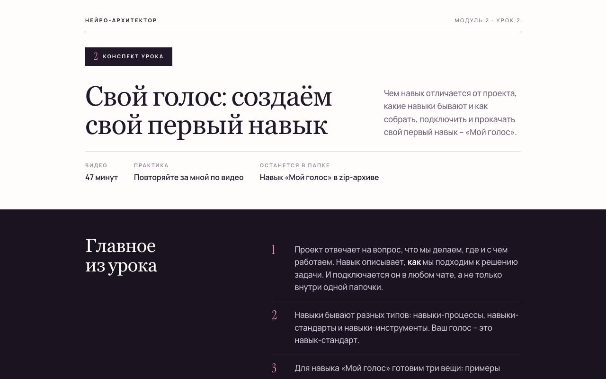
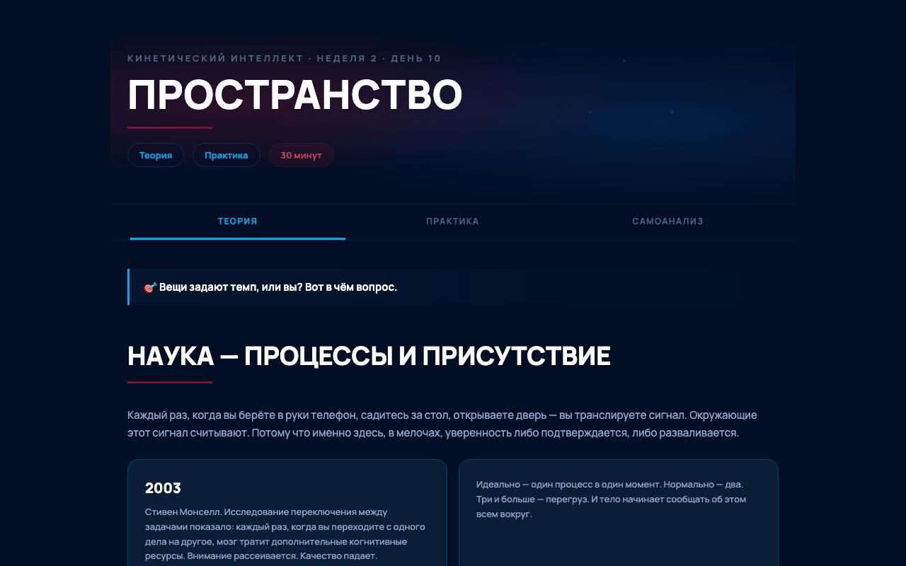
Что внутри хорошего конспекта
- Главное за 30 секунд. 3–5 пунктов в начале или в конце: если времени нет, человек прочитает только их и уже унесёт суть.
- Блоки с заголовками-выводами. Каждый блок отвечает на 1 вопрос, а заголовок называет вывод, а не тему. По заголовкам видна вся логика урока, даже если не читать текст.
- Меню или вкладки. Боковое меню с переходом к разделу или вкладки «Теория / Практика», чтобы на телефоне не листать до нужного места.
- Промпты с кнопкой «Скопировать». Тёмное окошко с текстом и кнопкой: человек копирует промпт одним нажатием и сразу пробует.
- Термины автора. Определение всегда в одном порядке: слово, что это, пример. Авторские слова не заменяются «более понятными».
- Кнопка к следующему шагу. В конце – ссылка на практику, следующий урок или чат, чтобы конспект вёл дальше, а не обрывался.
Промпт: конспект под вашу задачу
Скопируйте и заполните то, что в квадратных скобках
Ты – методист, который делает конспекты для онлайн-курсов. Сделай конспект в виде одной HTML-страницы. Материал: [вставьте расшифровку урока или эфира, свои заметки или тезисы] Для кого: [кто будет читать, например «участницы моего марафона, новички в ИИ»] Что человек должен унести: [главная мысль или навык после урока] Мой стиль: [паспорт стиля из урока 3 или 2–3 цвета и настроение] Сначала задай мне 3–5 вопросов: краткий или подробный нужен конспект, где его будут открывать (телефон или компьютер), что человек делает после прочтения, какие термины авторские и их нельзя менять. Потом покажи план: блоки, заголовки-выводы, где будут промпты. Верстай только после моего «да». Что должно быть на странице: – в начале «Главное за 30 секунд», 3–5 пунктов; – блоки по темам с заголовками-выводами; – меню по разделам (на телефоне – кнопка «Содержание»); – промпты из материала в окошках с кнопкой «Скопировать»; – термины в одном порядке: слово, что это, пример; – в конце кнопка: [куда ведём – практика, следующий урок, чат]. Сохрани мой тон и мои формулировки, сокращай только повторы. Ничего не придумывай: чего нет в материале, отметь [уточнить]. Технически: один файл HTML, всё внутри файла, удобно читать с телефона, без регистрации и внешних сервисов. Пришли файл целиком и коротко скажи, как его проверить.
Запускайте в нейросети, которая умеет делать файлы: ChatGPT, Claude или Gemini (в ГигаЧате и Алисе код придёт текстом – скопируйте его в файл). Сохраните результат как .html, откройте в браузере, проверьте с телефона и выложите по ссылке, как в уроке 4.
Проверьте перед тем, как отдавать
- «Главное за 30 секунд» понятно без остального текста и совпадает с тем, что звучало на уроке.
- Нейросеть ничего не добавила от себя: цифры, примеры и цитаты сверены с записью.
- Кнопки «Скопировать» копируют промпт целиком, без лишних слов вокруг.
- На телефоне меню открывается и закрывается, текст не уезжает за край экрана.
- Кнопка в конце ведёт туда, куда нужно.
Учить и объяснять · 2
Гайд-руководство по шагам
Пошаговая инструкция, по которой человек делает вместе с вами: открывает сервис рядом, проходит шаг за шагом, отмечает «Готово» и видит, сколько осталось. В конце у него на руках сделанное дело: настроенный аккаунт, первый пост, установленный помощник.
Когда пригодится
- Мама-блогер записывает гайд «Как выложить первый Reels с телефона» для подписчиц, которые давно хотят начать.
- Бухгалтер объясняет клиентам, как выгрузить выписку из банка и прислать её так, чтобы не переделывать.
- HR собирает для новичков гайд «Первый день»: куда зайти, какие доступы запросить, кому написать.
- Эксперт по ИИ ведёт подписчиков от регистрации в нейросети до первого полезного запроса.
- Любой блогер делает гайд подарком за подписку. Как собрать такой гайд-лид-магнит, разобрано в бонусе к уроку 4 «Гайд-подарок для подписчиков» ↗
Как это выглядит у меня
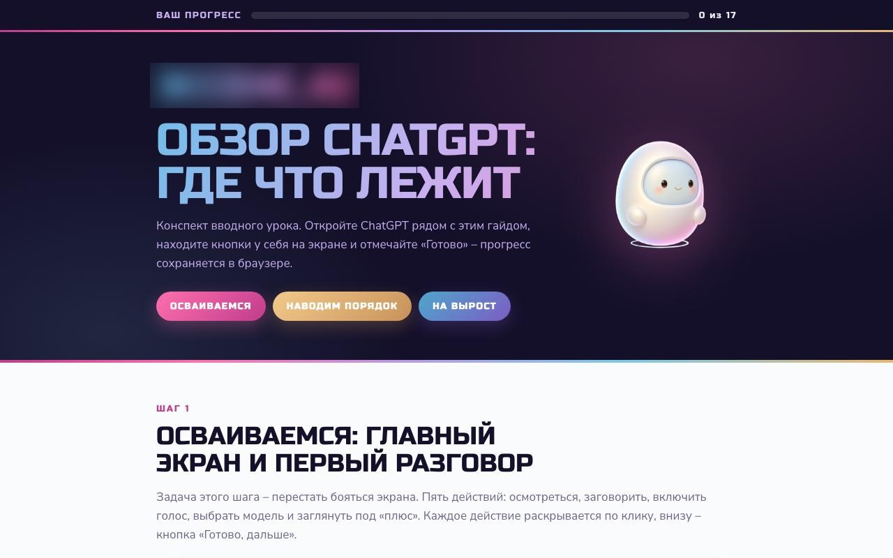
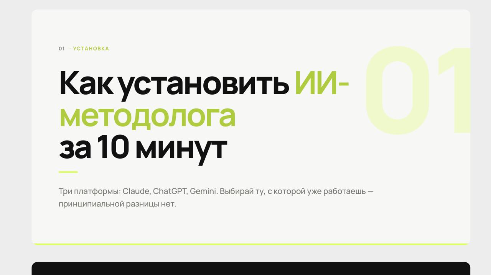
Что внутри хорошего гайда
- Название-результат. Что человек сделает к концу: «Установить ИИ-методолога за 10 минут», а не «Об ИИ-методологе».
- Для кого и что приготовить. 1 абзац перед шагами: какой нужен тариф, с компьютера или с телефона, нужен ли VPN.
- Шаги-действия. Цифра у края, заголовок с глаголом, внутри – куда зайти, что нажать, что вставить, и скриншот. 1 шаг – 1 действие.
- «Должно получиться». После шага – что человек увидит на экране, чтобы понять, что всё идёт верно.
- Типичная ошибка. Плашка другим цветом там, где люди чаще всего спотыкаются.
- Кнопка «Готово» и прогресс. Шкала вроде «3 из 17» сверху, отметки сохраняются в браузере: можно закрыть и вернуться к тому же месту.
Промпт: гайд под вашу задачу
Скопируйте и заполните то, что в квадратных скобках
Ты – методист, который пишет понятные пошаговые инструкции для новичков. Сделай гайд в виде одной HTML-страницы. Чему учит гайд: [1 навык одним предложением, например «выложить первый Reels с телефона»] Для кого: [кто читатель и его уровень: полный новичок или знает основы] Что у человека должно получиться в конце: [готовый результат] Материал: [мои заметки, шаги или скриншоты по порядку] Мой стиль: [паспорт стиля из урока 3 или 2–3 цвета и настроение] Сначала задай мне 3–5 вопросов: с компьютера или с телефона будут делать, что нужно приготовить заранее (аккаунт, тариф, VPN), где люди чаще всего ошибаются, что человек делает после гайда. Потом покажи план: шаги по 1 строке и какой скриншот к какому шагу. Верстай только после моего «да». Что должно быть на странице: – название-результат и абзац «для кого и что понадобится»; – шаги с номерами: заголовок с глаголом, куда зайти, что нажать, что вставить; – после каждого шага – «Должно получиться»; – плашка «Типичная ошибка», где она есть; – кнопка «Готово» у каждого шага и шкала прогресса сверху; – в конце чек-лист «Всё получилось, если…» и кнопка [куда ведём]. Названия кнопок бери только с моих скриншотов, не по памяти; если не видно – отметь [уточнить]. Технически: один файл HTML, всё внутри файла, удобно с телефона, отметки «Готово» сохраняются в браузере, без регистрации и внешних сервисов. Пришли файл целиком и коротко скажи, как его проверить.
Запускайте в нейросети, которая умеет делать файлы: ChatGPT, Claude или Gemini (в ГигаЧате и Алисе код придёт текстом – скопируйте его в файл). Сохраните результат как .html, откройте в браузере, пройдите сами и выложите по ссылке, как в уроке 4.
Проверьте перед тем, как отдавать
- Пройдите гайд сами с нуля, ничего не додумывая: если где-то пришлось догадываться, этот шаг нужно дописать.
- Названия кнопок совпадают с тем, что сейчас на экране сервиса.
- На скриншотах нет вашей почты, телефона, ключей и списка личных чатов.
- Отметки «Готово» остаются после перезагрузки страницы, а прогресс считает правильно.
- Гайд проходится с телефона, если вы обещаете, что так можно.
Учить и объяснять · 3
Рабочая тетрадь
Страница с вопросами и полями, где человек пишет своё: про свою ситуацию, цели, продукт. Ответы сохраняются в браузере, а в конце их можно скопировать одним нажатием и прислать вам или вставить в чат с нейросетью.
Когда пригодится
- Психолог даёт клиенту между сессиями тетрадь наблюдений на неделю, и на встречу клиент приходит уже с ответами.
- Нутрициолог перед консультацией просит заполнить вопросы о привычках, чтобы не тратить первые полчаса встречи на анкету.
- Коуч или методолог ведёт группу по программе: на каждой встрече свой блок вопросов и задачи на неделю.
- Репетитор даёт ученику тетрадь подготовки к экзамену: что уже получается, где путаюсь, что повторить.
- HR собирает тетрадь адаптации: новичок отвечает на вопросы о первой неделе и приносит ответы на встречу с руководителем.
Как это выглядит у меня
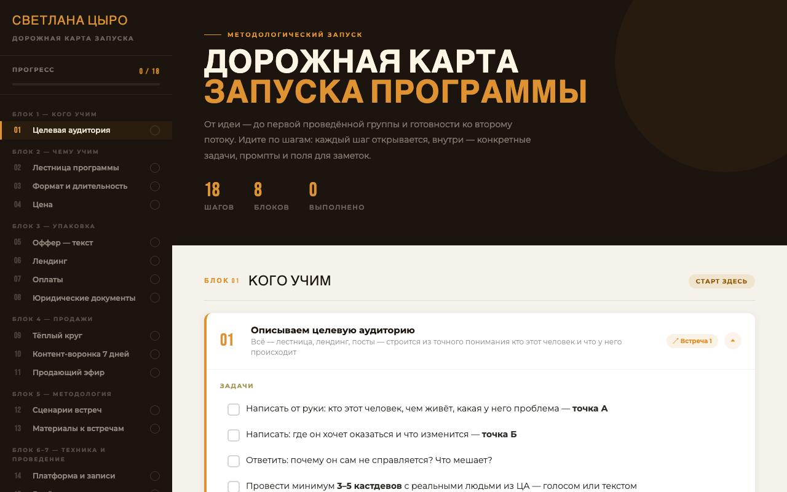
Попробуйте прямо здесь
Мини-пример · работает на этой странице
Заполнено 0 из 3
Ответы хранятся только в этом браузере и никуда не отправляются.
Что внутри хорошей тетради
- Короткая теория перед вопросом. 2–4 предложения, чтобы человек понял, зачем отвечать, и не застыл перед пустым полем.
- Открытые вопросы с подсказкой в поле. Вопрос тёплый и конкретный, а в поле серым – начало ответа или пример: «Я помогаю … перейти в … благодаря …».
- Большие поля, которые сохраняются сами. Человек закрыл вкладку, вернулся через 2 дня – ответы на месте. Поле высотой в 4–5 строк сразу показывает: сюда пишут.
- Счётчик и меню шагов. «Выполнено 3 из 18» и список шагов сбоку: видно, сколько пройдено и куда вернуться.
- Кнопка «Скопировать мои ответы». Собирает вопросы и ответы в один текст, который можно отправить вам или вставить в чат с нейросетью.
- Итоговый вопрос и следующий шаг. В конце 1–2 вопроса «что вы поняли и что делаете дальше» и ваша кнопка: записаться, перейти к следующему заданию.
Промпт: рабочая тетрадь под вашу задачу
Скопируйте и заполните то, что в квадратных скобках
Ты – методист, который делает рабочие тетради для обучения взрослых. Сделай рабочую тетрадь в виде одной HTML-страницы. Тема: [что человек исследует или делает про себя, например «упаковка моей первой консультации»] Для кого: [кто заполняет] Что у человека должно быть в конце: [например «готовый текст оффера» или «план на 4 недели»] Сколько времени на заполнение: [15 минут, час, несколько встреч] Мой стиль: [паспорт стиля из урока 3 или 2–3 цвета и настроение] Сначала задай мне 3–5 вопросов: на каком устройстве будут заполнять, какой нужен тон (тёплый или деловой), что человек делает с ответами потом (присылает мне, несёт в нейросеть, хранит у себя), есть ли у меня готовые вопросы. Потом покажи план: блоки, вопросы, подсказки в полях. Верстай только после моего «да». Что должно быть на странице: – блоки, в каждом короткая теория на 2–4 предложения и 1–3 открытых вопроса; – большие поля для ответов с подсказкой-примером внутри; – счётчик «Заполнено N из M» и меню блоков; – кнопка «Скопировать мои ответы»: собирает вопросы и ответы в один текст; – в конце итоговый вопрос и кнопка [куда ведём]. Технически: один файл HTML, всё внутри файла, удобно с телефона, ответы сохраняются в браузере этого устройства, без регистрации, без отправки ответов куда-либо и без внешних сервисов. Пришли файл целиком и коротко скажи, как его проверить.
Запускайте в нейросети, которая умеет делать файлы: ChatGPT, Claude или Gemini (в ГигаЧате и Алисе код придёт текстом – скопируйте его в файл). Сохраните результат как .html, откройте в браузере, заполните сами и выложите по ссылке, как в уроке 4.
Проверьте перед тем, как отдавать
- Напишите ответы, закройте вкладку и откройте снова: всё должно остаться на месте.
- Текст из «Скопировать мои ответы» вставляется в мессенджер читаемо: вопрос, под ним ответ.
- Участники знают, что ответы хранятся только в этом браузере: с другого устройства или в режиме инкогнито их не будет.
- Вопросы понятны без вас: дайте тетрадь 1 человеку и посмотрите, где он застрял.
- На телефоне поля широкие и в них удобно писать.
Учить и объяснять · 4
Интерактивная книга
Большой текст, который читают как книгу, только в браузере: с оглавлением, закладкой и практиками, где отвечают прямо на странице. Подходит, когда у вас накопился курс, серия эфиров или рукопись и хочется собрать всё в одно целое.
Когда пригодится
- Психолог собирает из записей своего курса книгу с упражнениями и дарит её выпускникам, чтобы работа продолжалась после программы.
- Фитнес-тренер превращает марафон в книгу-сопровождение: глава на каждый день и поле, чтобы записать самочувствие.
- Методолог или коуч упаковывает авторскую методику в книгу и открывает её покупателям по ключу.
- Нутрициолог собирает рецепты и разборы из эфиров в одну книгу с оглавлением вместо россыпи постов в ленте.
- Мама-блогер выпускает первую электронную книгу из своих лучших постов, без верстальщика и типографии.
Как это выглядит у меня
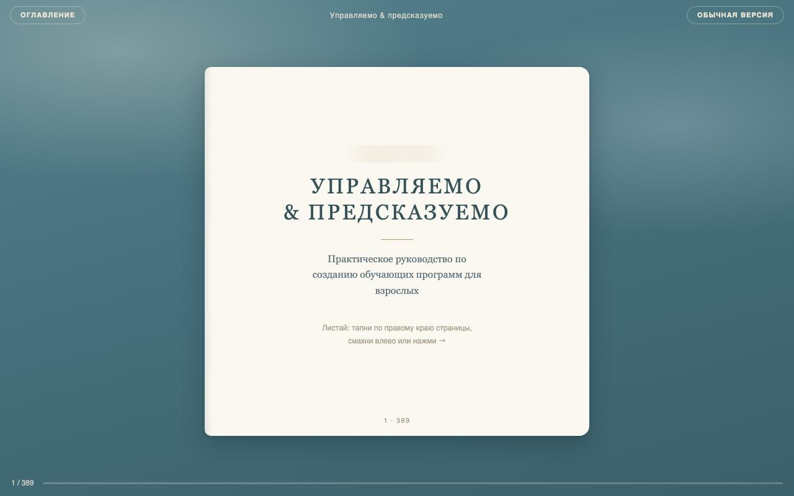
Что внутри хорошей книги
- Оглавление. Части и главы с переходом к любой одним нажатием; закрытые части – с замком, если вы открываете их постепенно.
- Листание. Страницы перелистываются нажатием по краю, свайпом или стрелкой на клавиатуре, внизу номер «1 / 389» и полоска прогресса.
- Закладка и «Продолжить чтение». Человек закрыл книгу, а через неделю открыл на том же месте.
- Прогресс чтения. «Прочитано глав: N из M» – приятно видеть, как число растёт.
- Практики с полями. После главы – вопрос и поле для ответа прямо в книге, без отдельной тетради.
- Рабочий лист. Все ответы из практик собираются на одной странице, их можно скопировать или распечатать.
Промпт: интерактивная книга под вашу задачу
Скопируйте и заполните то, что в квадратных скобках
Ты – редактор и верстальщик электронных книг. Собери интерактивную книгу в виде одной HTML-страницы. Материал: [расшифровки курса, рукопись или подборка постов – вставлю или приложу] Автор: [имя] Для кого книга: [кто будет читать] Что читатель должен получить в конце: [например «свою схему программы» или «план питания на неделю»] Мой стиль: [паспорт стиля из урока 3 или 2–3 цвета и настроение] Сначала задай мне 3–5 вопросов: как делим материал на части и главы, где нужны практики, обращаемся к читателю на «вы» или на «ты», будут ли закрытые главы, где будут читать – с телефона или с компьютера. Потом покажи оглавление: части, главы, откуда текст каждой, где практики. Верстай только после моего «да». Что должно быть в книге: – обложка с названием и автором; – оглавление с переходом к главе; – листание нажатием на край страницы, свайпом и стрелками, номер страницы и полоска прогресса; – закладка и кнопка «Продолжить чтение»; – практики после глав: вопрос и поле для ответа; – рабочий лист со всеми ответами и кнопками «Скопировать» и «Распечатать». Текст автора не переписывай и не досочиняй: примеры, истории и цифры – только из материала, чего нет – отметь [уточнить]. Технически: один файл HTML, всё внутри файла, удобно с телефона, закладка и ответы сохраняются в браузере, без регистрации и внешних сервисов. Пришли файл целиком и коротко скажи, как его проверить.
Запускайте в нейросети, которая умеет делать файлы: ChatGPT, Claude или Gemini (в ГигаЧате и Алисе код придёт текстом – скопируйте его в файл). Сохраните результат как .html, откройте в браузере, полистайте и выложите по ссылке, как в уроке 4.
Проверьте перед тем, как отдавать
- Главы сверены с исходником: нейросеть не досочинила примеры и не поменяла ваши формулировки.
- Закладка ставится, и на следующий день книга открывается на том же месте.
- Ответ из практики появляется в рабочем листе.
- Книга листается пальцем на телефоне, и текст не обрезается внизу страницы.
- Платную книгу вы не выкладываете по открытой ссылке: доступ – по ключу или через платформу курса.
Учить и объяснять · 5
Презентация в браузере
Слайды, которые открываются по ссылке в любом браузере и листаются стрелками или пальцем, без PowerPoint и без скачивания. Их удобно показывать на эфире, отправлять после выступления и сохранять в PDF. Подробно, с готовым навыком для нейросети, этот вид разобран в бонусе к уроку 4 «Презентации в HTML» ↗
Когда пригодится
- Нутрициолог проводит бесплатный эфир и после него отправляет слушателям ссылку на слайды вместо тяжёлого файла.
- Психолог показывает на консультации схему на 5 слайдах и тут же отправляет её клиенту.
- HR рассказывает новичкам о компании, а потом та же ссылка живёт в чате адаптации.
- Репетитор объясняет тему на онлайн-уроке через демонстрацию экрана и оставляет слайды ученику для повторения.
- Эксперт сдаёт клиенту отчёт слайдами: что сделано, какие получились цифры, что дальше.
Как это выглядит у меня
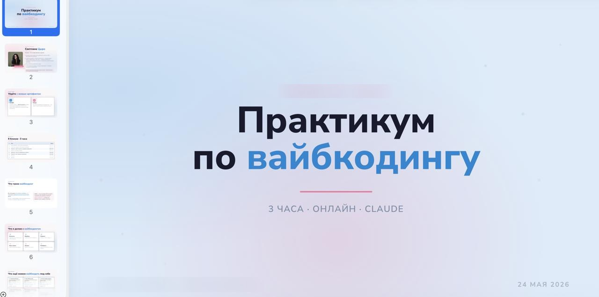
Что внутри хорошей презентации
- План до вёрстки. 1 слайд – 1 мысль, заголовок слайда – вывод, а не тема: «Заявки приходят с вебинаров, а не из постов» вместо «Продажи».
- Листание как в PowerPoint. Стрелки, пробел, свайп на телефоне, номер «3 / 12» на каждом слайде и номер в адресе, чтобы ссылка открывала нужный слайд.
- Полный экран. Клавиша F – и слайды на весь экран, как на проекторе.
- Миниатюры или оглавление. Колонка со всеми слайдами сбоку: удобно перейти к нужному, когда задают вопрос.
- Заметки докладчика. По клавише N – ваш текст к слайду, слушатели его не видят.
- Печать в PDF. По слайду на лист, без кнопок и подсказок, для тех, кто любит файлы.
Промпт: презентация под вашу задачу
Скопируйте и заполните то, что в квадратных скобках
Ты – дизайнер презентаций и методист. Собери презентацию в виде одной HTML-страницы. Материал: [тезисы, конспект или текст выступления] Где показываю: [эфир с демонстрацией экрана, зал с проектором или ссылка, которую человек листает сам] Для кого и сколько минут: [аудитория, длительность] Что слушатель должен понять или сделать после: [главная мысль] Мой стиль: [паспорт стиля из урока 3 или светлый/тёмный фон, 1 акцентный цвет, настроение] Сначала задай мне 3–5 вопросов о том, чего не хватает, например нужны ли заметки докладчика и где будут смотреть – с телефона или с компьютера. Потом покажи план таблицей: номер, заголовок-вывод, что на слайде. 1 слайд – 1 мысль, не больше 5 пунктов. Верстай только после моего «да». Что должно быть: – слайд 16:9 вписывается в экран целиком, на телефоне текст читается; – листание стрелками, пробелом и свайпом, номер «N / всего» и номер слайда в адресе; – клавиша F – полный экран, N – заметки докладчика; – миниатюры слайдов сбоку или оглавление; – печать в PDF по слайду на лист. Цифры, факты и отзывы – только из моего материала, чего нет – отметь [уточнить]. Технически: один файл HTML, всё внутри файла, без внешних библиотек, без регистрации и внешних сервисов. Пришли файл целиком и коротко скажи, как его проверить.
Запускайте в нейросети, которая умеет делать файлы: ChatGPT, Claude или Gemini (в ГигаЧате и Алисе код придёт текстом – скопируйте его в файл). Сохраните результат как .html, откройте в браузере, пролистайте и выложите по ссылке, как в уроке 4.
Проверьте перед тем, как отдавать
- Все слайды пролистаны стрелками и пальцем на телефоне: ничего не обрезано, текст читается.
- Заголовки – выводы, на слайде не больше 5 строк, остальное ушло в заметки.
- Полный экран включается и выключается, заметки слушатели не видят.
- PDF печатается по слайду на лист, без адреса и даты по краям.
- Ссылка с номером слайда в конце (например, #5) открывает нужный слайд.
Проверять и вовлекать · 6
Квиз-диагностика
Человек отвечает на несколько вопросов о себе и в конце получает не оценку, а свой профиль: что с ним сейчас происходит и какой шаг сделать первым. Правильных ответов здесь нет – есть точка, с которой удобно начать.
Когда пригодится
- Фитнес-тренер помогает новичку понять, с чего начать: с силовых, с растяжки или с ежедневной ходьбы.
- Психолог даёт клиенту перед первой встречей короткий квиз «Где у меня сейчас больше всего напряжения» – и на сессии уже есть от чего оттолкнуться.
- Нутрициолог ведёт подписчиков с бесплатного квиза «Какой у вас тип перекусов» к марафону: у каждого профиля свой совет и своё приглашение.
- Репетитор определяет, с чего начать подготовку к экзамену: с базы, с практики или со скорости.
- Мама-блогер публикует квиз «Какой вы родитель в утренние сборы» – лёгкий повод для сторис и разговора в комментариях.
Как это выглядит у меня
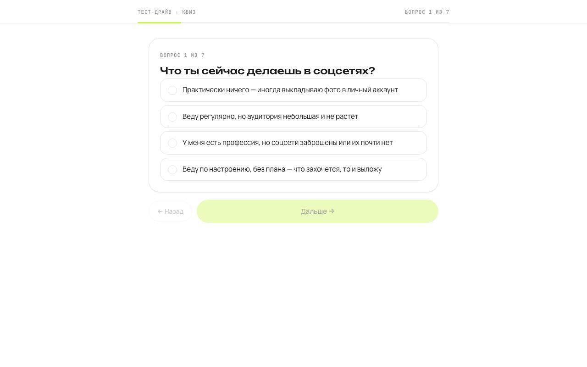
Попробуйте прямо здесь
Мини-пример · работает на этой странице
Ваш профиль
Что внутри хорошего квиза
- Вопросы о жизни человека, а не о знаниях. Он узнаёт себя в вариантах ответа: «Веду по настроению, без плана» звучит как его собственные слова.
- 1 вопрос на экране и шкала прогресса. Видно, сколько осталось, – так легче дойти до конца.
- Разные механики. Не только «выберите один вариант», но и шкала от 1 до 5, выбор нескольких, расставить по порядку.
- 3–4 профиля результата. У каждого – описание простыми словами, без диагнозов и громких обещаний, и одно следующее действие: материал, задание дня, запись.
- Ответы сохраняются в браузере. Закрыли страницу, вернулись – всё на месте. Кнопка «Пройти заново» всё очищает.
- Кнопка «Скопировать результат». Человек может прислать свой профиль вам или поделиться им с подругой.
Промпт: квиз под вашу задачу
Скопируйте и заполните то, что в квадратных скобках
Ты – методолог и верстальщик. Помоги мне собрать квиз-диагностику одной HTML-страницей. Тема: [тема квиза, например «Какая тренировка подойдёт вам сейчас»] Для кого: [кто будет проходить] Что человек должен получить в конце: [профиль и следующий шаг – например, задание дня или запись на консультацию] Стиль: [мой паспорт стиля из урока 3 или 2–3 цвета и настроение] Сначала задай мне 3–5 вопросов: сколько вопросов в квизе, какие будут профили результата, куда вести человека после результата, где будут открывать квиз (телефон или компьютер). Потом покажи план списком: вопросы с механикой каждого, 3–4 профиля и следующий шаг для каждого. Дождись моего «да» и только потом верстай. Что должно быть в квизе: – правильных ответов нет: каждый вариант добавляет баллы одному из профилей; – 1 вопрос на экране, шкала прогресса «Вопрос 2 из 7», кнопки «Назад» и «Дальше»; – разные механики: выбор одного, выбор нескольких, шкала от 1 до 5; – в конце профиль: название, 2–3 предложения простыми словами без диагнозов и громких обещаний и одно следующее действие; – кнопки «Скопировать результат» и «Пройти заново». Технически: один файл HTML, всё внутри файла, удобно с телефона, без прокрутки вбок, ответы сохраняются в браузере, без регистрации и сбора личных данных, без внешних сервисов. Пришли файл целиком и коротко скажи, как его проверить.
Запускайте в нейросети, которая умеет делать файлы и код: ChatGPT, Claude, Gemini (ГигаЧат и Алиса отдадут код текстом – скопируйте его в файл). Сохраните результат как файл .html, откройте в браузере, пройдите сами и выложите по ссылке, как в уроке 4.
Проверьте перед тем, как отдавать
- Пройдите квиз 3 раза, каждый раз отвечая «под» другой профиль, – результат должен меняться.
- Нет профиля, который не выпадает никогда или выпадает почти всегда.
- В описаниях профилей нет диагнозов, ярлыков и обещаний вроде «через месяц вы похудеете».
- Обновите страницу на середине – ответы на месте, а «Пройти заново» всё очищает.
- С телефона варианты нажимаются пальцем, текст не уезжает вбок.
Проверять и вовлекать · 7
Тест с проверкой ответов
Здесь у вопросов есть верные ответы. Человек проходит тест, видит свой балл и разбор: где ошибся, какой ответ правильный и почему. Так удобно закрепить материал и понять, что стоит повторить.
Когда пригодится
- Репетитор после каждой темы даёт ученику 10 вопросов и по баллу видит, что разобрать на следующем занятии.
- HR проверяет, как новые сотрудники усвоили правила компании после вводного обучения.
- Автор курса ставит в конце итоговый тест: балл по каждому модулю, разбор ошибок и понятный порог зачёта.
- Фитнес-тренер проверяет, запомнили ли новички правила безопасности на тренировке, – до того, как они возьмут гантели.
- Бухгалтер, который учит предпринимателей, делает тест по налоговым срокам – с пояснением к каждой ошибке.
Как это выглядит у меня
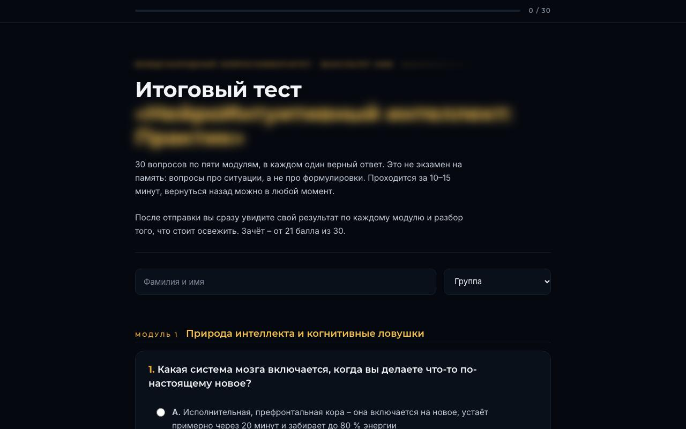
Попробуйте прямо здесь
Мини-пример · работает на этой странице
Что внутри хорошего теста
- Вопросы про ситуации, а не про формулировки. Не «дайте определение», а «что вы сделаете, если…» – так проверяется понимание, а не память.
- Правдоподобные неверные варианты. Ошибки, которые люди и правда делают, а не очевидная чепуха. И без подвохов: тест учит, а не ловит.
- Пояснение к каждому ответу. Сразу после выбора или в итоговом разборе: какой ответ верный и почему.
- Балл и порог. «8 из 10», балл по каждому разделу, если тест большой, и понятное правило зачёта.
- Разные механики. Выбор одного, выбор нескольких, сопоставить пары, расставить по порядку.
- Результат, который можно передать. Кнопки «Скопировать результат» и «Сохранить в PDF» – человек присылает итог вам или куратору.
Промпт: тест под вашу задачу
Скопируйте и заполните то, что в квадратных скобках
Ты – методолог и верстальщик. Помоги мне собрать тест с проверкой ответов одной HTML-страницей. Тема: [тема или модуль курса] Для кого: [кто проходит тест] Материал, по которому проверяем: [вставь конспект, план урока или список тем] Что человек должен получить в конце: [балл, разбор ошибок и что повторить] Стиль: [мой паспорт стиля из урока 3 или 2–3 цвета и настроение] Сначала задай мне 3–5 вопросов: сколько вопросов, какой порог зачёта, показывать разбор сразу после ответа или в конце, где будут проходить тест (телефон или компьютер). Потом покажи план: список вопросов с механикой и верным ответом каждого. Дождись моего «да» и только потом верстай. Что должно быть в тесте: – вопросы про ситуации, а не на заучивание; неверные варианты правдоподобные, без подвохов; – разные механики: выбор одного, выбор нескольких, сопоставить пары, расставить по порядку; – после ответа или в конце – верный ответ и пояснение «почему»; – итог: общий балл, балл по разделам, если их больше 1, и что стоит повторить; – кнопки «Скопировать результат», «Сохранить в PDF» и «Пройти заново». Вопросы и верные ответы бери только из моего материала, ничего не придумывай. Перед тем как отдать, сам проверь, что верные ответы действительно верные. Технически: один файл HTML, всё внутри файла, удобно с телефона, ответы сохраняются в браузере, без регистрации и сбора личных данных, без внешних сервисов. Пришли файл целиком и коротко скажи, как его проверить.
Запускайте в нейросети, которая умеет делать файлы и код: ChatGPT, Claude, Gemini (ГигаЧат и Алиса отдадут код текстом – скопируйте его в файл). Сохраните результат как файл .html, откройте в браузере, пройдите сами и выложите по ссылке, как в уроке 4.
Проверьте перед тем, как отдавать
- Сверьте каждый верный ответ с материалом своими глазами: нейросеть может ошибиться в ключе.
- Пройдите тест, отвечая верно, – должен получиться максимум. Потом ошибитесь нарочно в 2 вопросах – балл должен стать меньше ровно на 2.
- Верный ответ не угадывается по длине или по словам «всегда» и «никогда».
- «Сохранить в PDF» открывает печать, где видны вопросы и ответы, а кнопок нет.
- «Скопировать результат» даёт строку, которую понятно прочитать в мессенджере.
Проверять и вовлекать · 8
Карточки, игры, перевёртыши
Человек нажимает на карточку – и она переворачивается, выдаёт задание или открывает, что скрыто за словами. Такие механики превращают повторение и практику в игру: хочется открыть ещё одну.
Когда пригодится
- Репетитор английского делает карточки «слово – перевод» с кнопками «Знаю» и «Повторить».
- Фитнес-тренер собирает колоду «Разминка дня»: нажали – выпало случайное задание на 5 минут.
- Психолог делает «стену страхов»: клиент нажимает на свой страх и видит, что за ним стоит и что с этим делать.
- Тренер по выступлениям раздаёт группе случайные темы с таймером – каждый говорит 2 минуты без подготовки.
- HR проводит на вводном обучении игру «Правда или миф о нашей компании».
Как это выглядит у меня
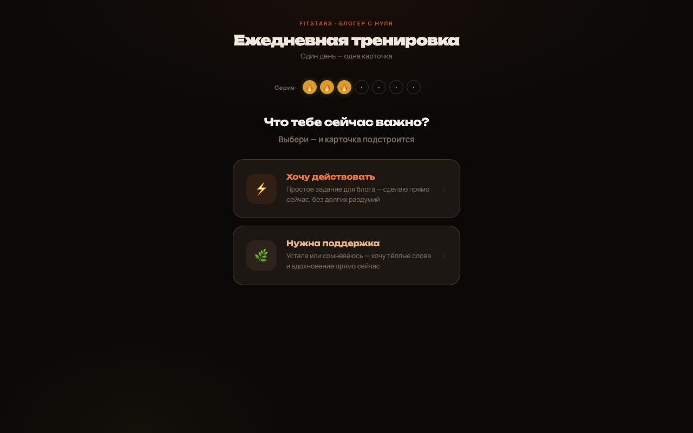
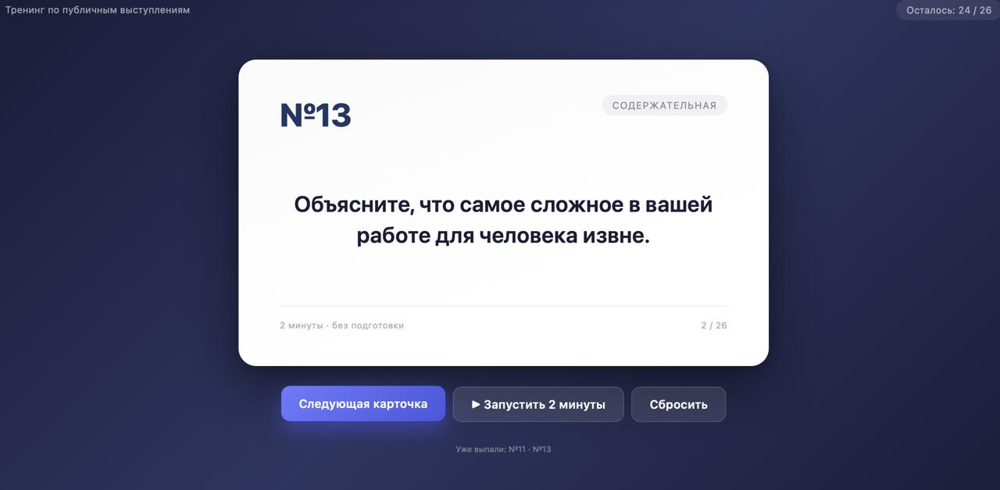
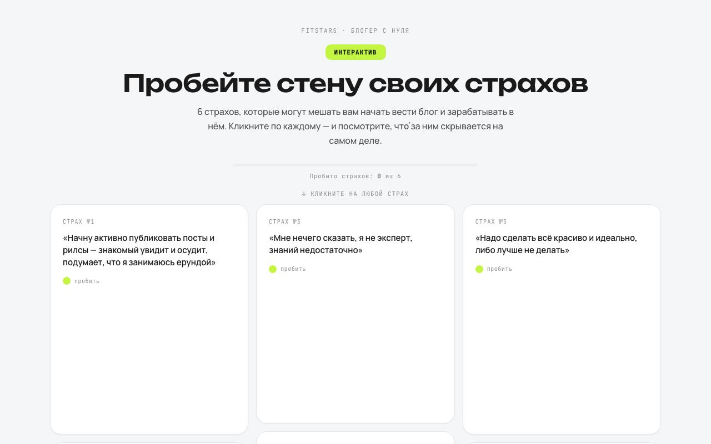
Попробуйте прямо здесь
Мини-пример · работает на этой странице
Что внутри хорошей игры с карточками
- Одна понятная механика. Перевернуть, вытянуть случайную, выбрать по настроению – человек понимает, что делать, без инструкции.
- Короткий текст на карточке. На лицевой стороне – вопрос, слово или страх, на обороте – ответ в 2–3 предложениях.
- Счётчик. «Открыто 3 из 6», «осталось 24 из 26» – видно, сколько впереди, и хочется закончить.
- Случайность без повторов. Если карточки выпадают случайно, уже выпавшие не возвращаются, пока колода не закончится.
- Таймер или серия, если нужен ритм. 2 минуты на ответ, отметка «день 3 из 7».
- Кнопка «Сбросить». Чтобы пройти колоду заново или дать её другому человеку.
Промпт: игра с карточками под вашу задачу
Скопируйте и заполните то, что в квадратных скобках
Ты – методолог и верстальщик. Помоги мне собрать игру с карточками одной HTML-страницей. Тема: [о чём карточки, например «Мифы о питании» или «Темы для выступления»] Для кого: [кто будет играть] Что человек должен получить в конце: [например, разобрал свои страхи, повторил 20 слов, потренировался говорить без подготовки] Содержание карточек: [вставь список или попроси предложить варианты, а я выберу] Стиль: [мой паспорт стиля из урока 3 или 2–3 цвета и настроение] Сначала задай мне 3–5 вопросов: какая механика нужна (перевернуть карточку, вытянуть случайную, выбрать по настроению, «Знаю / Повторить»), сколько карточек, нужен ли таймер или серия дней, где будут играть (телефон, компьютер, экран на занятии). Потом покажи план: механику и список карточек «лицо – оборот». Дождись моего «да» и только потом верстай. Что должно быть: – карточки крупные, нажимаются пальцем, переворачиваются с плавной анимацией; – на обороте коротко, 2–3 предложения; – счётчик «открыто 3 из 10» или «осталось 8 из 10»; – если карточки случайные, уже выпавшие не повторяются; – кнопка «Сбросить»; – [таймер на N минут или серия дней – если нужно]. Технически: один файл HTML, всё внутри файла, удобно с телефона, прогресс сохраняется в браузере, без регистрации и сбора личных данных, без внешних сервисов. Пришли файл целиком и коротко скажи, как его проверить.
Запускайте в нейросети, которая умеет делать файлы и код: ChatGPT, Claude, Gemini (ГигаЧат и Алиса отдадут код текстом – скопируйте его в файл). Сохраните результат как файл .html, откройте в браузере, сыграйте сами и выложите по ссылке, как в уроке 4.
Проверьте перед тем, как отдавать
- Откройте все карточки по очереди: ни одна не пустая, текст на обороте не обрезается.
- Если карточки случайные, вытяните всю колоду: повторов нет, в конце понятно, что колода закончилась.
- «Сбросить» возвращает к началу и счётчик, и карточки.
- С телефона карточки переворачиваются касанием, а не только наведением мышки.
- Таймер, если он есть, останавливается и запускается заново.
Проверять и вовлекать · 9
Тренажёр по шагам
Человек проходит упражнение шаг за шагом: видит ситуацию, сам что-то делает или выбирает, получает обратную связь и идёт дальше. Он не читает про навык, а пробует его – и сразу видит, что получилось.
Когда пригодится
- Психолог даёт клиенту между сессиями упражнение по шагам: сделать, заметить, ответить себе на вопрос.
- HR тренирует руководителей давать обратную связь: ситуация с сотрудником → выбрать фразу → увидеть, почему она сработает или нет.
- Нутрициолог учит читать состав на упаковке: на каждом шаге новый продукт и вопрос, что в составе стоит заметить.
- Фитнес-тренер ведёт по технике упражнения: шаг – действие – вопрос к себе «где чувствуете напряжение?».
- Эксперт по ИИ даёт ученикам тренажёр «Найди слабое место в промпте» – как в мини-примере ниже.
Как это выглядит у меня
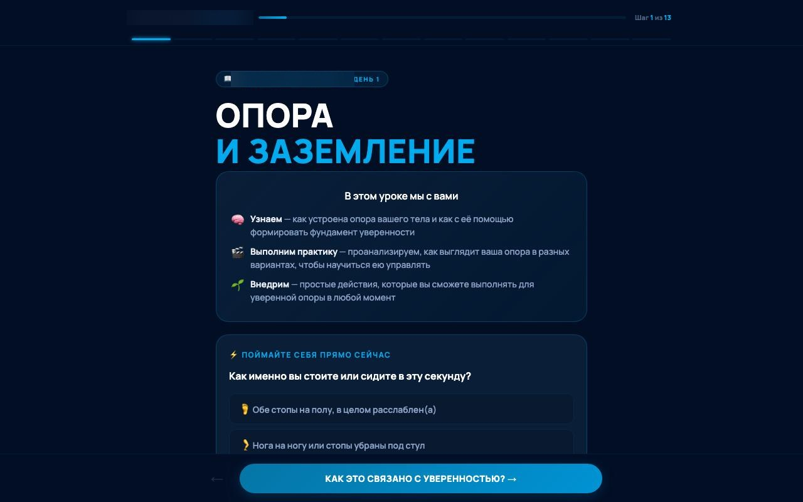
Попробуйте прямо здесь
Мини-пример · работает на этой странице
Чего не хватает этому промпту?
Контекст, задача и результат – 3 части, которые стоит держать в голове, когда пишете нейросети. Не обязательно по пунктам: можно наговорить голосом и добавить забытое по ходу.
Что внутри хорошего тренажёра
- Ситуация из жизни. Конкретный случай, где навык нужен: клиент, задача, текст, поза за столом.
- Действие на каждом шаге. Выбрать, написать свой ответ, сделать упражнение и ответить себе на вопрос – а не только прочитать.
- Обратная связь сразу. Что получилось, что нет и почему – и подсказка, как сделать лучше в следующей попытке.
- Шаги по одному и кнопка «Далее». Прогресс сверху, следующий шаг открывается после текущего.
- Тот же навык в новой ситуации. Хотя бы 1 шаг, где человек применяет то же действие в другом случае, – так видно, что он понял, а не угадал.
- Итог и действие на сегодня. Что отработано и где применить это прямо сейчас.
Промпт: тренажёр под вашу задачу
Скопируйте и заполните то, что в квадратных скобках
Ты – методолог и верстальщик. Помоги мне собрать тренажёр по шагам одной HTML-страницей. Навык, который тренируем: [что человек должен научиться делать, например «отвечать на возражение о цене»] Для кого: [кто будет тренироваться и какой у него уровень] Что человек должен получить в конце: [какое действие у него получается и где он применит его сегодня] Материал: [вставь конспект, свои примеры ситуаций или опиши их голосом] Стиль: [мой паспорт стиля из урока 3 или 2–3 цвета и настроение] Сначала задай мне 3–5 вопросов: какие ситуации взять, сколько шагов, какие ошибки люди делают чаще всего, где будут проходить тренажёр (телефон или компьютер). Потом покажи план: шаги по порядку – ситуация, что делает человек, какую обратную связь получает. Дождись моего «да» и только потом верстай. Что должно быть в тренажёре: – на каждом шаге ситуация и действие: выбрать вариант, написать свой ответ или сделать упражнение и ответить себе на вопрос; – сразу после действия обратная связь: что получилось, что нет, почему и как сделать лучше; – шаги по одному, прогресс «Шаг 2 из 6», кнопки «Назад» и «Далее»; – хотя бы 1 шаг, где тот же навык нужен в новой ситуации; – в конце итог: что отработано и одно действие на сегодня, без обещаний «вы освоили навык»; – кнопка «Начать заново». Технически: один файл HTML, всё внутри файла, удобно с телефона, прогресс и ответы сохраняются в браузере, без регистрации и сбора личных данных, без внешних сервисов. Пришли файл целиком и коротко скажи, как его проверить.
Запускайте в нейросети, которая умеет делать файлы и код: ChatGPT, Claude, Gemini (ГигаЧат и Алиса отдадут код текстом – скопируйте его в файл). Сохраните результат как файл .html, откройте в браузере, пройдите все шаги сами и выложите по ссылке, как в уроке 4.
Проверьте перед тем, как отдавать
- Пройдите тренажёр, нарочно ошибаясь: на ошибку человек получает объяснение «почему», а не просто «неверно».
- На каждом шаге человек что-то делает сам, а не только читает.
- Шаги идут по порядку, и проскочить шаг без действия нельзя, если вы так задумали.
- Обновите страницу на середине – вы на том же шаге, ответы на месте.
- Итог честный: 1 попытка – это тренировка, а не «вы освоили навык».
Проверять и вовлекать · 10
Интерактивная схема
Картинка, у которой каждая часть живая: человек наводит мышку или нажимает на блок – и раскрывается объяснение. Сложная модель видна целиком, а подробности открываются тогда, когда человек до них дошёл.
Когда пригодится
- Психолог показывает клиенту модель «мысли – чувства – действия»: нажимаешь на круг – видишь пояснение и вопрос к себе.
- Фитнес-тренер даёт схему тела: нажимаешь на группу мышц – открываются 2 упражнения для неё.
- Нутрициолог объясняет тарелку питания: каждая часть тарелки раскрывает примеры продуктов.
- HR показывает путь нового сотрудника в первый месяц: каждый этап – что происходит и к кому идти с вопросами.
- Бухгалтер рисует путь документа от счёта до отчёта: кто что делает на каждом шаге.
Как это выглядит у меня
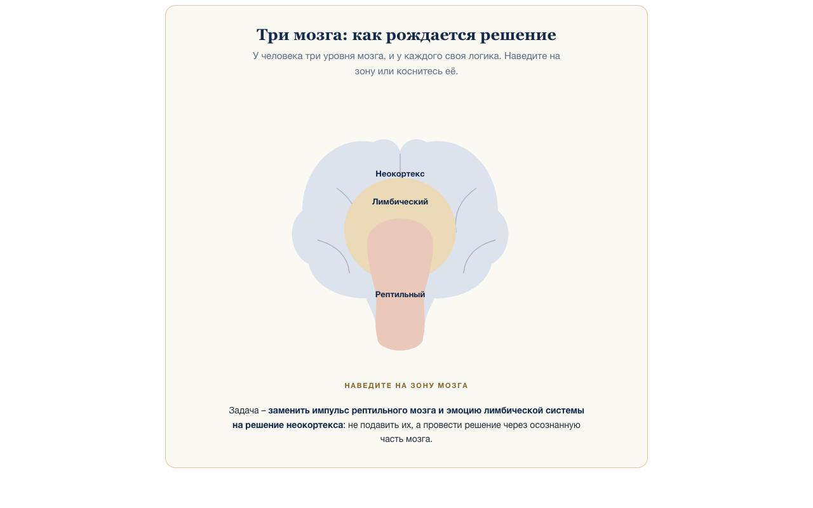
Попробуйте прямо здесь
Мини-пример · работает на этой странице
Путь задачи к ИИ · наведите или нажмите на блок
Нажмите на любой блок
Под схемой появится объяснение: что это за шаг и как он выглядит в вашем запросе.
Главная мысль: чем яснее вы прошли первые 3 шага, тем меньше правок понадобится на четвёртом.
Что внутри хорошей схемы
- Вся схема на одном экране. Человек сначала видит целое: сколько частей и как они связаны.
- Подсказка, что делать. «Наведите на зону или нажмите на неё» – прямо над схемой.
- Короткое объяснение рядом. Что это за часть, зачем она и пример. Объяснение не всплывает поверх и не закрывает картинку.
- Работает касанием. На телефоне мышки нет, поэтому объяснение открывается и нажатием пальца.
- Выбранная часть выделена. Сразу видно, какой блок сейчас открыт.
- Главная мысль без нажатий. Вывод схемы написан под ней – его видно, даже если ничего не нажимать.
Промпт: схема под вашу задачу
Скопируйте и заполните то, что в квадратных скобках
Ты – методолог и верстальщик. Помоги мне собрать интерактивную схему одной HTML-страницей. Модель или процесс: [что показываем, например «Путь клиента от заявки до результата»] Части схемы: [перечисли части и что важно сказать о каждой или вставь конспект – тогда предложи разбивку сам] Для кого: [кто будет смотреть] Что человек должен понять в конце: [главная мысль схемы одной фразой] Стиль: [мой паспорт стиля из урока 3 или 2–3 цвета и настроение] Сначала задай мне 3–5 вопросов: какая форма подойдёт (цепочка шагов, круг, пирамида, рисунок), сколько частей, где будут смотреть схему (телефон, компьютер, экран на занятии). Потом покажи план: форму схемы и текст для каждой части. Дождись моего «да» и только потом верстай. Что должно быть в схеме: – вся схема видна на одном экране, части подписаны; – над схемой подсказка «Наведите или нажмите на часть схемы»; – при наведении мышки и при нажатии пальцем выбранная часть выделяется, а под схемой или рядом раскрывается объяснение: что это, зачем и пример; – объяснение не закрывает схему; – под схемой главная мысль, которую видно без нажатий. Нарисуй схему прямо в коде (блоками или рисунком SVG – это картинка, которая пишется кодом), без картинок со стороны. Технически: один файл HTML, всё внутри файла, удобно с телефона, без прокрутки вбок, без регистрации и сбора личных данных, без внешних сервисов. Пришли файл целиком и коротко скажи, как его проверить.
Запускайте в нейросети, которая умеет делать файлы и код: ChatGPT, Claude, Gemini (ГигаЧат и Алиса отдадут код текстом – скопируйте его в файл). Сохраните результат как файл .html, откройте в браузере, понажимайте на все части и выложите по ссылке, как в уроке 4.
Проверьте перед тем, как отдавать
- Нажмите на каждую часть по очереди – у всех есть своё объяснение.
- Откройте с телефона: схема помещается в ширину экрана, части нажимаются пальцем.
- Подписи на схеме не наезжают друг на друга и не обрезаются.
- Объяснения сверены с вашим материалом: нейросеть могла что-то додумать, особенно в научных темах.
Организовать работу · 11
Чек-лист
Список шагов, которые человек отмечает нажатием и сразу видит, сколько уже сделано и сколько осталось. Отметки не пропадают: можно закрыть страницу и вернуться к ней завтра.
Когда пригодится
- Фитнес-тренер отправляет новичку чек-лист «Готовлюсь к первой тренировке»: форма, вода, полотенце, во сколько выйти из дома.
- Репетитор даёт родителям «Собираемся на экзамен»: паспорт, ручки, пропуск, адрес и время, к которому нужно приехать.
- Бухгалтер присылает клиентам «Что сделать до конца месяца»: собрать чеки, сверить поступления, ответить на вопросы по документам.
- HR встречает нового сотрудника чек-листом «Первая неделя»: доступы, знакомство с командой, встреча с руководителем.
- Мама-блогер делает для подписчиков «Собираем ребёнка в лагерь» – и получает лид-магнит (бесплатный полезный материал в обмен на подписку).
Как это выглядит у меня
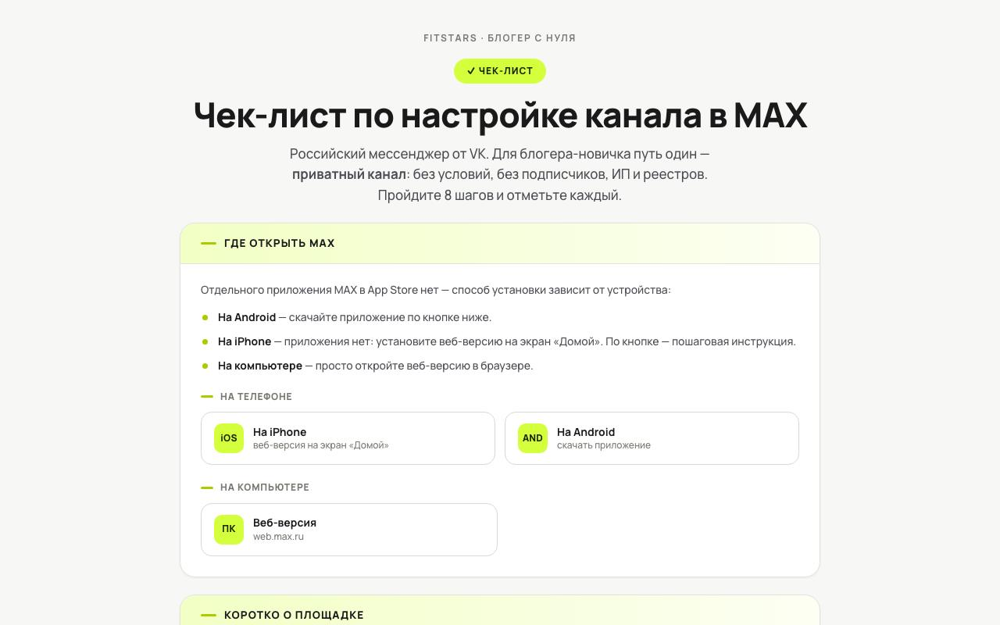
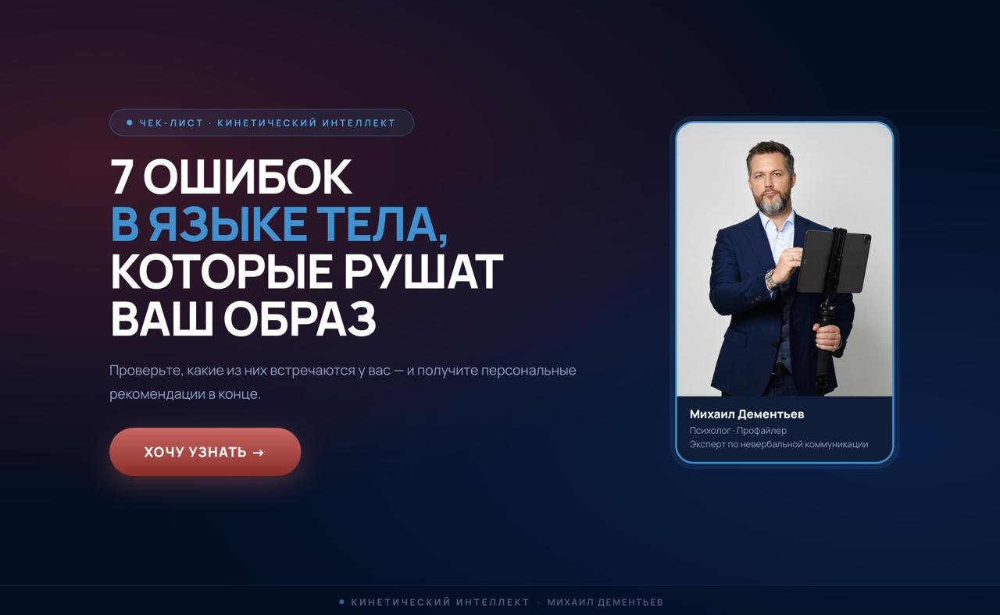
Попробуйте прямо здесь
Мини-пример · работает на этой странице
Что внутри хорошего чек-листа
- Название с целью. Из заголовка сразу понятно, что будет, когда всё отмечено: «Страница готова к публикации», «Канал настроен».
- Пункты-действия. Каждый пункт начинается с глагола и честно отмечается «да» или «нет»: «Открыть ссылку в другом браузере», а не «Ссылки».
- Группы, если пунктов много. Больше 7–8 пунктов лучше разложить по блокам, как в чек-листе по MAX: «на телефоне» и «на компьютере».
- Полоса прогресса и счётчик. «4 из 6» видно сверху, и хочется дойти до конца.
- Сохранение и «Сбросить». Отметки остаются в браузере, а кнопка позволяет пройти чек-лист заново.
- Итог и следующий шаг. Когда всё отмечено – что делать дальше. Или рекомендации по отмеченным пунктам, как в лид-магните про язык тела.
Промпт: чек-лист под вашу задачу
Скопируйте и заполните то, что в квадратных скобках
Ты – методолог и верстальщик. Помоги мне собрать интерактивный чек-лист одной HTML-страницей. Тема: [о чём чек-лист, например «Готовлюсь к первой тренировке»] Для кого: [кто будет отмечать пункты] Что человек получит в конце: [готов к старту / список того, что поправить / рекомендации] Мой материал: [вставь список пунктов, конспект или расшифровку] Стиль: [мой паспорт стиля из урока 3 или 2–3 цвета и настроение] Сначала задай мне 3–5 вопросов: где будут открывать (телефон или компьютер), нужны ли группы пунктов, что показать, когда всё отмечено. Потом покажи план списком: группы, пункты, итог. Верстай только после моего «да». Что должно быть на странице: – заголовок с целью и 1–2 строки, зачем этот чек-лист; – пункты-действия, каждый начинается с глагола и отмечается нажатием; – полоса прогресса и счётчик «N из N»; – итог, когда всё отмечено (или рекомендации по отмеченным пунктам), и 1 следующий шаг; – кнопка «Сбросить». Технически: один файл HTML, всё внутри файла, удобно с телефона (крупные пункты, без прокрутки вбок), отметки сохраняются в браузере, без регистрации, без сбора личных данных, без внешних сервисов. Пункты бери только из моего материала, ничего не добавляй от себя. Пришли файл целиком и коротко скажи, как его проверить.
Запускайте в нейросети, которая умеет делать файлы: ChatGPT, Claude, Gemini; в ГигаЧате и Алисе попросите код текстом и сохраните его в файл .html. Откройте файл в браузере, проверьте по списку ниже и выложите по ссылке, как в уроке 4.
Проверьте перед тем, как отдавать
- Каждый пункт можно честно отметить «да» или «нет» – нет расплывчатых вроде «Хорошая страница».
- Отметьте 2–3 пункта и обновите страницу: отметки на месте, а «Сбросить» всё очищает.
- Откройте с телефона: пункты нажимаются пальцем, прокрутки вбок нет.
- Если в конце рекомендации – в них нет диагнозов и громких обещаний.
- Все пункты взяты из вашего материала, нейросеть ничего не дописала от себя.
Организовать работу · 12
Трекер привычки, тренировок, задач
Страница, где человек каждый день или каждую неделю ставит отметку: сделал тренировку, выпил воду, написал пост. Он видит, сколько уже позади и сколько осталось, а отметки хранятся у него в браузере.
Когда пригодится
- Фитнес-тренер дарит клиенту трекер «3 тренировки в неделю» на месяц: клиент отмечает сделанное и видит, как растёт счётчик.
- Нутрициолог даёт трекер воды и овощей на 2 недели между консультациями – клиенту проще держать привычку, а на встрече есть о чём поговорить.
- Репетитор предлагает ученику «20 минут английского в день» – серия дней подряд мотивирует лучше напоминаний.
- Блогер собирает трекер для своего марафона «пост каждый день», и участники отмечают дни сами.
- Мама в декрете делает трекер для ребёнка: зубы почистил, игрушки убрал, книжку прочитали.
Как это выглядит у меня
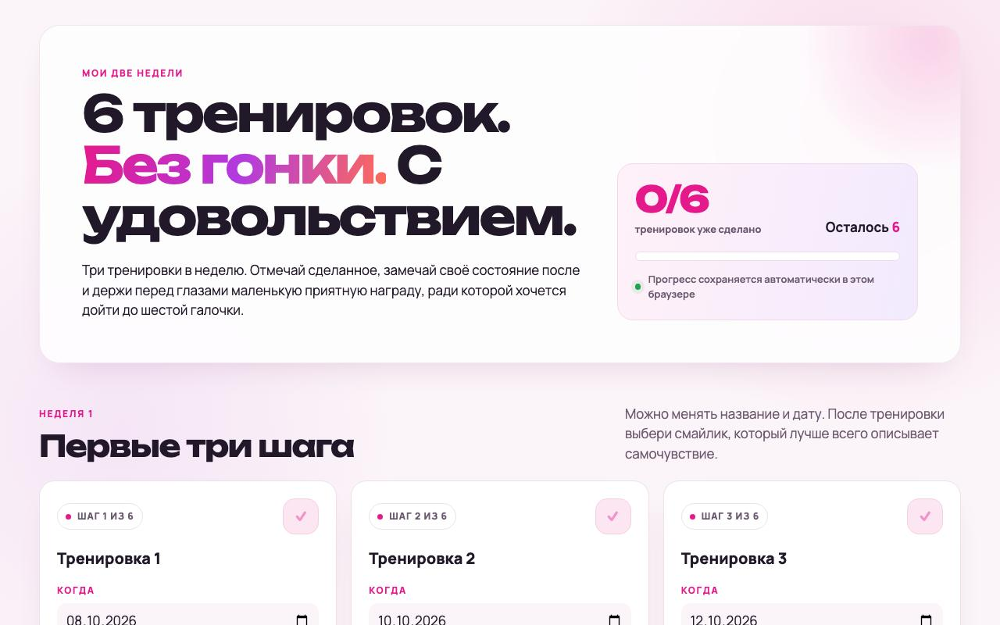
Попробуйте прямо здесь
Мини-пример · работает на этой странице
Что внутри хорошего трекера
- Цель и срок. «6 тренировок за 2 недели», «7 дней постов» – понятная цель вместо бесконечного списка.
- Крупные отметки. Нажали – день закрасился. Удобно пальцем с телефона, без лишних полей.
- Прогресс. Счётчик «3 из 7» и полоса показывают, сколько уже сделано и сколько осталось.
- Серия подряд. Мягкая мотивация не пропускать: жалко прерывать 4 дня подряд.
- Заметка или самочувствие. Пара слов или смайлик после отметки, как в трекере тренировок: потом видно, что помогало.
- Сохранение и «Сбросить» с вопросом. Отметки живут в браузере, а сброс переспрашивает «Точно?», чтобы не стереть неделю случайно.
Промпт: трекер под вашу задачу
Скопируйте и заполните то, что в квадратных скобках
Ты – методолог и верстальщик. Помоги мне собрать трекер одной HTML-страницей. Что отслеживаем: [привычка, тренировки или задачи – например «3 тренировки в неделю»] Для кого: [для себя / для моих клиентов / для участников марафона] Срок: [неделя / 2 недели / месяц] Что значит «сделано»: [просто галочка / число – минуты, стаканы / оценка самочувствия] Что человек получит в конце: [видит, что дошёл до конца, и получает награду – какую] Стиль: [мой паспорт стиля из урока 3 или 2–3 цвета и настроение] Сначала задай мне 3–5 вопросов: как часто будут заходить, где открывать (телефон или компьютер), какой тон – спокойный, деловой или игровой, нужна ли награда в конце. Потом покажи план: что на экране, какие отметки, как считается прогресс. Верстай только после моего «да». Что должно быть в трекере: – заголовок с целью и сроком; – крупные отметки по дням или по тренировкам, нажимаются пальцем; – счётчик «сделано N из N» и полоса прогресса; – серия подряд, если это уместно; – поле для короткой заметки или оценки самочувствия; – кнопка «Сбросить» с подтверждением. Технически: один файл HTML, всё внутри файла, удобно с телефона, отметки сохраняются в браузере сразу при нажатии, без регистрации, без сбора личных данных, без внешних сервисов. Под трекером одной строкой напиши: отметки хранятся в этом браузере, на другом устройстве их не будет. Пришли файл целиком и коротко скажи, как его проверить.
Запускайте в нейросети, которая умеет делать файлы: ChatGPT, Claude, Gemini; в ГигаЧате и Алисе попросите код текстом и сохраните его в файл .html. Откройте файл в браузере, проверьте по списку ниже и выложите по ссылке, как в уроке 4.
Проверьте перед тем, как отдавать
- Отметьте 2 дня, закройте страницу и откройте снова – отметки на месте.
- Счётчик и серия считаются верно: отметьте понедельник, вторник и четверг – должно быть «3 из 7» и серия 2 дня.
- «Сбросить» сначала спрашивает подтверждение и только потом очищает отметки.
- На телефоне все дни помещаются в экран и нажимаются пальцем.
- Если трекер для клиентов, предупредите их: отметки живут в их браузере, и вы их не увидите.
Организовать работу · 13
Расписание и календарь
Страница, где по дням и часам видно, что, когда и где проходит. Человек нажимает на нужный день и сразу видит время, тему и ссылку на встречу – без поиска по чату.
Когда пригодится
- Фитнес-тренер выкладывает расписание марафона: что в какой день, во сколько эфир, где смотреть запись.
- Психолог проводит интенсив выходного дня – участникам удобно видеть, когда практика, когда перерыв и куда подключаться.
- Репетитор собирает расписание занятий группы на месяц со ссылками на домашние задания.
- HR готовит программу первой недели для нового сотрудника: встречи, обучение, ссылки на документы.
- Мама-блогер отправляет родителям группы одной ссылкой план детского праздника или семейных выходных.
Как это выглядит у меня
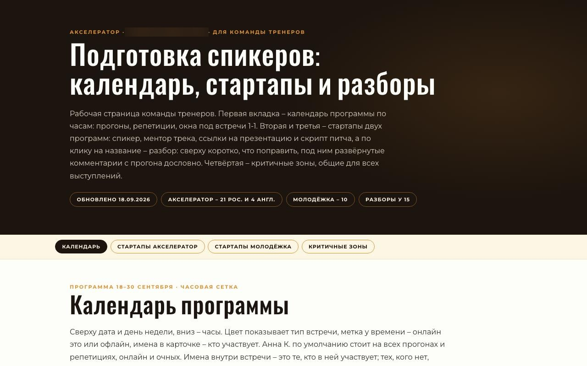
Попробуйте прямо здесь
Мини-пример · работает на этой странице
Время по Москве. Обновлено перед стартом интенсива.
Что внутри хорошего расписания
- Вкладки по дням или неделям. Человек сразу выбирает свой день и не листает всю программу.
- Время у левого края. Глаз бежит по столбцу часов, а рядом – что происходит.
- Что и где в одной строке. Тема, формат (эфир, практика, чат) и ссылка на подключение – всё в одном слоте.
- Цвет или метка по типу встречи. Эфир, практика, свободное время различаются с первого взгляда, как в календаре команды тренеров.
- Часовой пояс и дата обновления. Участники из разных городов не путаются, и видно, что расписание свежее.
Промпт: расписание под вашу задачу
Скопируйте и заполните то, что в квадратных скобках
Ты – методолог и верстальщик. Помоги мне собрать расписание одной HTML-страницей. Что за событие: [марафон, интенсив, курс, ретрит, программа первой недели] Для кого: [участники, клиенты, родители, команда] Даты и часовой пояс: [например: 14–16 ноября, время по Москве] Программа: [вставь списком: день – время – что – где или ссылка] Что человек должен получить: [всегда знать, куда и во сколько подключаться] Стиль: [мой паспорт стиля из урока 3 или 2–3 цвета и настроение] Сначала задай мне 3–5 вопросов: где будут открывать (телефон или компьютер), нужны ли вкладки по дням или неделям, какие типы встреч выделить цветом, что показать, если ссылки ещё нет. Потом покажи план: вкладки, слоты, подписи. Верстай только после моего «да». Что должно быть на странице: – вкладки по дням, по нажатию показывается нужный день; – в каждом слоте: время у левого края, что происходит, где или ссылка; – метка или цвет по типу встречи (эфир, практика, свободное время); – часовой пояс и дата обновления наверху; – место для ссылки на запись после встречи. Технически: один файл HTML, всё внутри файла, удобно с телефона (вкладки переносятся, а не уезжают за край), без регистрации, без сбора личных данных, без внешних сервисов. Время, даты и ссылки бери только из моей программы; если чего-то не хватает – пиши [уточнить]. Пришли файл целиком и коротко скажи, как его проверить.
Запускайте в нейросети, которая умеет делать файлы: ChatGPT, Claude, Gemini; в ГигаЧате и Алисе попросите код текстом и сохраните его в файл .html. Откройте файл в браузере, проверьте по списку ниже и выложите по ссылке, как в уроке 4.
Проверьте перед тем, как отдавать
- Сверьте каждое время и дату со своей программой: нейросеть легко путает день или час.
- Нажмите все ссылки – открываются нужные эфиры и материалы.
- Часовой пояс указан, если участники из разных городов.
- На телефоне вкладки помещаются в экран и переключаются.
- Если встречу перенесли, правьте этот же файл и выкладывайте заново под тем же именем – ссылка у людей останется прежней.
Организовать работу · 14
Калькулятор
Человек вводит свои числа и сразу видит результат: сколько стоит, сколько нужно, сколько выйдет. Формулу закладываете вы, а считает страница.
Когда пригодится
- Нутрициолог даёт калькулятор КБЖУ или порций: клиент вводит продукты и граммы и видит итог за день.
- Мастер ремонта или дизайнер интерьера показывает стоимость ремонта по метрам и видам работ – клиент заранее понимает порядок цены.
- Организатор праздников или мама-блогер делится расчётом бюджета детского дня рождения: гости, угощение, аниматор, подарки.
- Наставник по ИИ считает вместе с клиентом, сколько часов в месяц экономит ИИ: какая задача, как часто, сколько минут уходило раньше.
- Автор курса проверяет окупаемость: цена, сколько учеников, расходы на рекламу и сервисы – и когда курс выходит в плюс.
Попробуйте прямо здесь
Мини-пример · работает на этой странице
Сколько стоит ваша услуга
У самозанятых обычно 4% с оплат от людей и 6% – от компаний и ИП. Уточните свой режим и ставку.
На правки, непредвиденное и паузы между заказами.
Налог берётся со всей суммы, которую платит клиент, поэтому калькулятор подбирает цену так, чтобы после налога у вас осталась себестоимость с запасом. Это ориентир, а не налоговая консультация.
Что внутри хорошего калькулятора
- Поля с подписями и единицами. «Часов», «₽», «%» прямо в подписи и готовые значения по умолчанию – результат виден с первой секунды.
- Подсказки там, где легко ошибиться. Откуда взять число и какое оно бывает обычно, как у налога в примере выше.
- Пересчёт сразу при вводе. Без кнопки «Посчитать»: поменяли число – итог обновился.
- Итог крупно и расшифровка. Человек видит не только сумму, но и из чего она сложилась, и может ей доверять.
- Защита от ошибок. Пустое поле, ноль или минус не ломают страницу и не превращают итог в непонятные символы.
- Оговорка и следующий шаг. Строка «это ориентир» и действие: записаться, написать, посмотреть прайс.
Промпт: калькулятор под вашу задачу
Скопируйте и заполните то, что в квадратных скобках
Ты – методолог и верстальщик. Помоги мне собрать калькулятор одной HTML-страницей. Что считаем: [стоимость услуги / бюджет праздника / окупаемость курса / своё] Для кого: [для себя / для моих клиентов / для подписчиков] Какие числа вводит человек: [поля и единицы: часы, рубли, проценты, штуки] Как считать: [формула словами, например: часы × ставка + расходы, потом + запас] Что человек получит в конце: [итог и 1 действие, например записаться на консультацию] Стиль: [мой паспорт стиля из урока 3 или 2–3 цвета и настроение] Сначала задай мне 3–5 вопросов: где будут открывать (телефон или компьютер), какие значения поставить по умолчанию, как округлять, что показать в расшифровке итога. Потом покажи формулу и посчитай вручную 1 пример с моими числами. Верстай только после моего «да». Что должно быть на странице: – поля с подписями, единицами и значениями по умолчанию; – подсказки к полям, где легко ошибиться; – пересчёт сразу при вводе, без кнопки; – итог крупно и расшифровка, из чего он сложился; – строка, что расчёт – ориентир, и следующий шаг. Технически: один файл HTML, всё внутри файла, удобно с телефона (поля во всю ширину, цифровая клавиатура), пустое поле или минус не ломают расчёт, без регистрации, без сбора личных данных, без внешних сервисов. Не добавляй медицинских, юридических и налоговых советов от себя. Пришли файл целиком и коротко скажи, как его проверить.
Запускайте в нейросети, которая умеет делать файлы: ChatGPT, Claude, Gemini; в ГигаЧате и Алисе попросите код текстом и сохраните его в файл .html. Откройте файл в браузере, проверьте по списку ниже и выложите по ссылке, как в уроке 4.
Проверьте перед тем, как отдавать
- Формулу проверяйте на известных значениях, как таблицы в уроке 2: возьмите пример, который вы посчитали сами, введите те же числа – итог должен совпасть до рубля.
- Попробуйте крайние случаи: ноль, пустое поле, очень большое число. Страница не должна показывать ошибку или непонятные символы.
- Калькулятор не даёт медицинских и юридических советов: КБЖУ, налоги, нормы – это ориентир, а решение за специалистом. Напишите это строкой под итогом.
- Ставки и нормы берите из своих источников и время от времени сверяйте – нейросеть может подставить устаревшие.
- С телефона при вводе открывается цифровая клавиатура, а итог виден без долгой прокрутки.
Организовать работу · 16
Личный кабинет и дашборд
Страница клиента или ученика, где собран весь его путь с вами: цель, прогресс, история встреч и задания. Человек открывает ссылку и сразу видит, где он сейчас и что делать до следующей встречи, а вам не нужно пересказывать это в переписке.
Когда пригодится
- Нутрициолог ведёт клиента 2 месяца: после каждой встречи в кабинете появляются конспект, задачи до следующей сессии и отметка, сколько дней заполнен дневник питания.
- Фитнес-тренер даёт потоку дашборд (страницу со сводкой в цифрах): тренировки недели, общий прогресс по программе и цель, которую участница поставила себе на старте.
- Психолог или коуч хранит историю сессий: даты, о чём говорили, какие шаги клиент взял на себя. Между встречами клиенту есть куда вернуться.
- Репетитор показывает ученику и родителям, какие темы пройдены, какие задания сданы и сколько осталось до цели к экзамену.
- HR или наставник ведёт новичка: план адаптации на 3 месяца, встречи 1:1 и задачи, которые отмечаются как сделанные.
Как это выглядит у меня
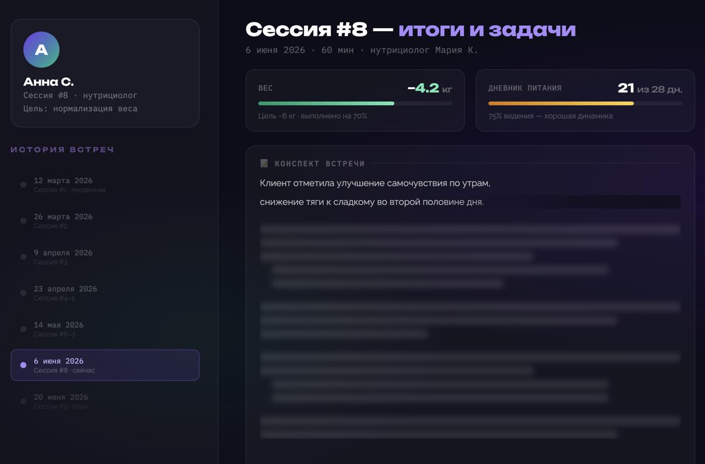
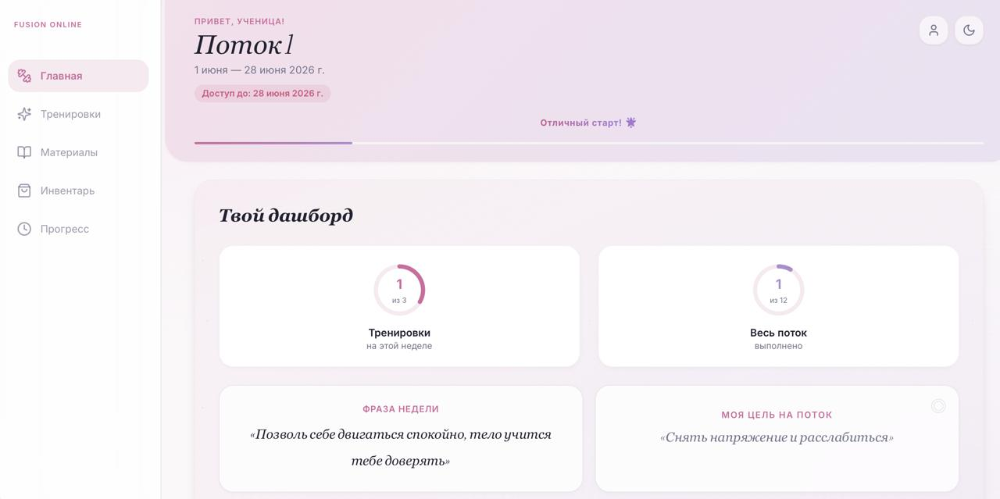
Попробуйте прямо здесь
Мини-пример · работает на этой странице
Моя неделя с ИИ
Нажимайте «+», когда сделаете шаг: прогресс пересчитается сам и сохранится в этом браузере.
Отдать ИИ рутинную задачу
0 из 5
Собрать пост или текст с ИИ
0 из 3
Добавить работу в «Моё портфолио»
0 из 2
Что внутри хорошего кабинета
- Шапка с главным. Имя или псевдоним, цель и где человек сейчас: «встреча 3 из 8», «неделя 2 из 4».
- Прогресс по цели. Полоса или кольцо с цифрами «сделано из скольких». Человек за секунду видит движение, и это само по себе держит в тонусе.
- История встреч. Список дат, по клику открываются конспект встречи, договорённости и задания.
- Задания с галочками. Человек отмечает сделанное, отметки сохраняются в браузере, а прогресс пересчитывается сам.
- Следующий шаг. Дата следующей встречи, 1 действие до неё и кнопка «Написать» в ваш мессенджер.
Промпт: кабинет под вашу задачу
Скопируйте и заполните то, что в квадратных скобках
Ты – опытный веб-дизайнер и методолог. Помоги собрать личный кабинет [клиента / ученика / участника] – страницу, где виден весь его путь со мной. О задаче: – Я: [кто вы и чем занимаетесь, например «нутрициолог, веду клиентов 2 месяца»]. – Для кого кабинет: [кто будет его открывать]. – Что человек должен получить: [например, видеть прогресс к цели и знать, что делать до следующей встречи]. – Стиль: [паспорт стиля из урока 3 или 3 слова о настроении]. Сначала задай мне 3–5 вопросов: какие показатели считаем, сколько встреч, что человек отмечает сам, с чего будут открывать – телефон или компьютер. Потом покажи план страницы и верстай только после моего «да». Что должно быть на странице: 1. Шапка: имя или псевдоним, цель, этап («встреча 3 из 8»). 2. Прогресс по [1–3 показателям] – полосы или кольца с цифрами «сделано из». 3. История встреч: даты, по клику раскрываются конспект, договорённости и задания. 4. Задания с галочками – отметки сохраняются в браузере, прогресс пересчитывается сам. 5. Блок «Следующий шаг»: дата встречи, 1 действие до неё и кнопка «Написать» со ссылкой на [мой Telegram]. Технически: один файл HTML, всё внутри файла, удобно с телефона. Данные клиента вынеси в начало кода одним блоком и пометь, где я обновляю их после встречи. Без регистрации, без форм, без внешних сервисов. Не выводи фамилию, телефон и почту – только имя или псевдоним. Не придумывай цифры: чего нет в моих ответах – оставь [уточнить]. Пришли файл целиком и коротко скажи, как его проверить.
Запускайте в нейросети, которая умеет делать файлы и код: ChatGPT, Claude, Gemini (ГигаЧат и Алиса помогут с текстом и планом). Готовый файл сохраните с расширением .html, откройте в браузере, пройдите глазами клиента и выложите по ссылке, как в уроке 4.
Проверьте перед тем, как отдавать
- Откройте страницу с телефона глазами клиента: за 5 секунд понятно, где он сейчас и что делать дальше.
- Отметьте 2 задания, закройте страницу и откройте снова: галочки и прогресс на месте.
- Проценты считаются верно: 3 из 5 – это 60%, а не 70%.
- На странице нет фамилии, телефона, почты и того, что клиент не готов показать: бесплатная страница на GitHub Pages открыта всем, у кого есть ссылка.
- Вы знаете, где в файле поменять данные после следующей встречи, или попросите нейросеть показать это место.
Показать и собрать · 17
Лендинг: страница услуги или продукта
Страница о вашей услуге или продукте: кто вы, для кого это, что человек получит, сколько стоит и куда нажать. У неё 1 задача – чтобы человек сделал конкретное действие: написал, записался или купил.
Когда пригодится
- Психолог запускает новый формат, например работу с парами, и ему нужна ссылка, которую можно отправить в ответ на «расскажите подробнее».
- Фитнес-тренер набирает поток онлайн-тренировок: программа по неделям, 2–3 тарифа и кнопка «Записаться».
- Репетитор по английскому описывает подготовку к экзамену: как проходит занятие, сколько стоит, ответы на частые вопросы родителей.
- Бухгалтер для самозанятых упаковывает консультацию «разберу ваши налоги за 1 встречу» в страницу с кнопкой «Написать в Telegram».
- Мама-блогер продаёт свой гайд или марафон и ставит ссылку на лендинг в шапку профиля.
Как это выглядит у меня
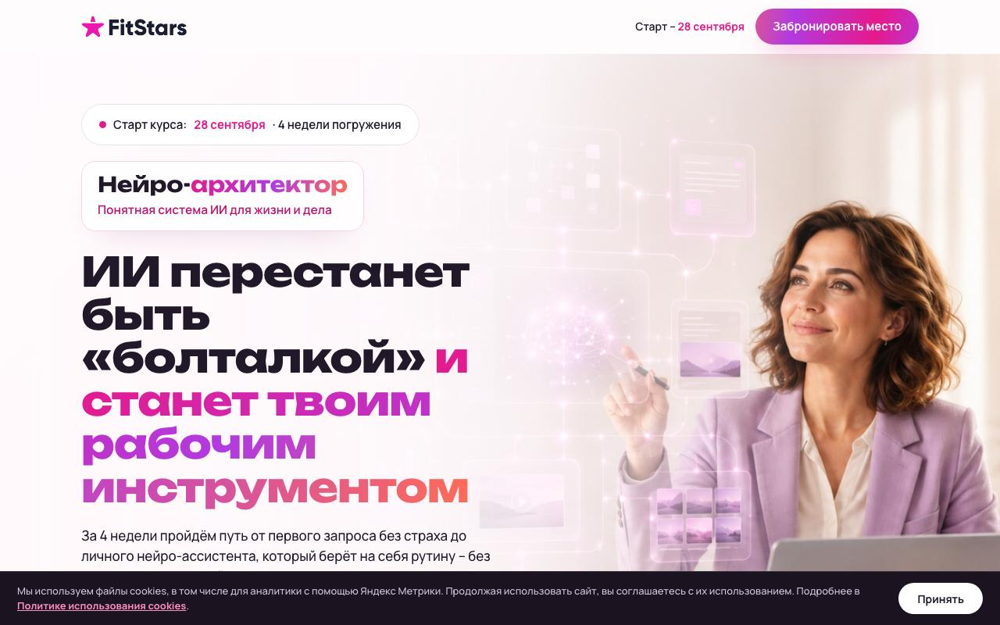
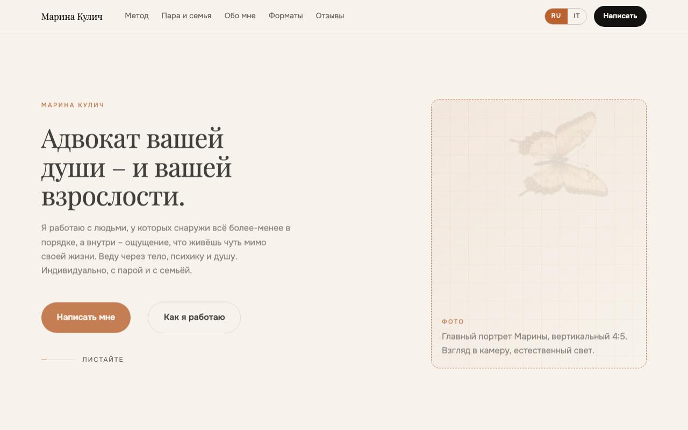
Что внутри хорошего лендинга
- Первый экран с результатом. Заголовок говорит, что человек получит, а не кем вы работаете: «Разберу ваши налоги самозанятого за 1 встречу» вместо «Бухгалтер Ольга». Рядом сразу кнопка.
- Для кого и что получите. Блок «Это для вас, если…» и 3–5 результатов: человек узнаёт себя и понимает пользу.
- Как проходит работа. 3–4 шага от заявки до результата. Они снимают тревогу «а что вообще будет».
- Тарифы с переключателем. 2–3 варианта, один выделен. Переключатель, например «1 встреча / Пакет из 4», меняет цены и состав без перезагрузки страницы.
- Вопросы с раскрывающимися ответами. 4–6 настоящих вопросов, которые вам задают чаще всего. Ответ открывается по клику, и страница не превращается в простыню текста.
- Кнопка в мессенджер. Одна и та же кнопка «Написать» стоит в начале, в середине и в конце и ведёт сразу в ваш Telegram или WhatsApp. Сама страница заявки не собирает и оплату не принимает: где разместить лендинг, какие документы нужны для приёма заявок и оплаты и как подключить оплату, рассказывает плагин урока 4 «Свой сайт без программиста».
Промпт: лендинг под вашу задачу
Скопируйте и заполните то, что в квадратных скобках
Ты – опытный веб-дизайнер и редактор продающих страниц. Помоги собрать лендинг моей [услуги / продукта / консультации]. О задаче: – Я: [кто вы и чем занимаетесь, 2 предложения, как другу]. – Для кого: [кто откроет страницу и что его беспокоит]. – Что человек должен сделать в конце: [написать / записаться / купить – что-то 1]. – Чем я отличаюсь: [1 вещь, которую вы делаете иначе]. – Что уже есть: [тексты, отзывы, цены, фото – или «ничего, соберём вместе»]. – Стиль: [паспорт стиля из урока 3 или 3 слова о настроении]. Сначала задай мне 3–5 вопросов по самому размытому, в том числе с чего будут открывать – телефон или компьютер. Потом предложи план из 6–8 блоков (первый экран, для кого, что получите, как проходит работа, обо мне, отзывы, тарифы, вопросы) и верстай только после моего «да». Интерактив: 1. Вопросы и ответы – ответ раскрывается по клику. 2. Переключатель тарифов: [вариант А] / [вариант Б] – цены и состав меняются без перезагрузки. 3. Кнопка «[текст кнопки]» в начале, в середине и в конце, ведёт на [ссылка на ваш Telegram или WhatsApp]. Технически: один файл HTML, всё внутри файла, удобно с телефона, кнопки крупные. Без форм с отправкой данных и без внешних сервисов. Не придумывай отзывы, цифры и регалии: чего нет в моих ответах – оставь [уточнить]. Пришли файл целиком и коротко скажи, как его проверить.
Запускайте в нейросети, которая умеет делать файлы и код: ChatGPT, Claude, Gemini (ГигаЧат и Алиса помогут с текстами блоков). Готовый файл сохраните с расширением .html, откройте в браузере, проверьте с телефона и выложите по ссылке, как в уроке 4.
Проверьте перед тем, как отдавать
- Первый экран без прокрутки отвечает на 3 вопроса: что это, для кого и куда нажать.
- Все кнопки «Написать» открывают ваш мессенджер. Проверьте с телефона, а не только с компьютера.
- Каждый вопрос раскрывается и закрывается, переключатель тарифов меняет цены, и цены совпадают с теми, что вы называете в переписке.
- На странице нет выдуманных отзывов и цифр: всё, что подставила нейросеть, заменено вашим или убрано.
- Если вы собираете имена и телефоны или принимаете оплату, документы на месте. Какие именно, подскажет плагин «Свой сайт без программиста».
Показать и собрать · 18
Страница-портфолио
Страница о вас и ваших работах: карточки «задача – что сделано – результат» и кнопка «Написать мне». Свою вы уже собрали в уроке 4 из документа «Моё портфолио», а здесь – идеи, как её развить.
Когда пригодится
- HR-специалист отправляет ссылку вместе с откликом на вакансию: работодатель видит не список обязанностей, а сделанные задачи с результатом.
- SMM-специалист или мама-блогер собирает работы для заказчиков: посты, визуал, контент-планы. По фильтру заказчик сразу находит то, что нужно ему.
- Психолог ставит ссылку в профиль: с чем работает, отзывы клиентов с их разрешения и кнопка записи.
- Бухгалтер для самозанятых показывает типовые задачи, которые решает, и клиент узнаёт свою ситуацию ещё до первого сообщения.
Как это выглядит у меня
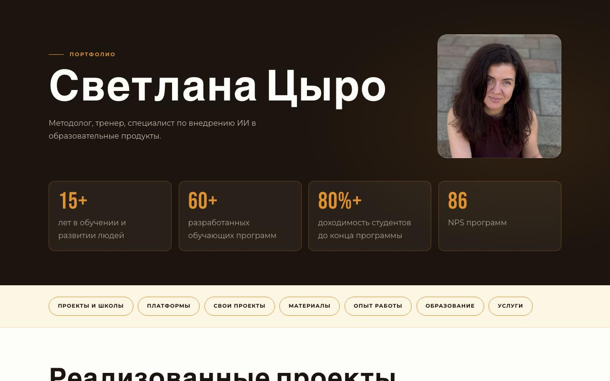
Как развить страницу из урока 4
- Цифры в начале. 3–4 факта о вас: сколько лет в профессии, сколько клиентов или проектов. Только настоящие, без округления в большую сторону.
- Фильтр по темам. Когда работ больше 6, кнопки вроде «Тексты / Таблицы / Визуал / Помощники» помогают человеку сразу найти своё.
- Кейсы раскрываются. Сначала короткая карточка, по клику – задача, что вы сделали, результат и фрагмент самой работы.
- «До и после». 2 текста или 2 картинки рядом: как было и как стало. С разрешения клиента и без его данных.
- Отзывы. 2–3 настоящих отзыва с конкретным результатом, с разрешения автора.
- Кнопка «Написать мне». На телефоне закреплена внизу экрана, чтобы не искать её после просмотра.
Промпт: докрутить свою страницу-портфолио
Скопируйте и заполните то, что в квадратных скобках
Ты – опытный веб-дизайнер и редактор. У меня уже есть страница-портфолио из урока 4 – прикрепляю файл index.html. Прикрепляю и свежий документ «Моё портфолио» и паспорт стиля из урока 3. Задача: докрутить страницу, не ломая то, что уже работает. – Для кого страница: [клиенты / работодатель / заказчики – кто именно]. – Что человек должен сделать в конце: [написать мне в Telegram / записаться на звонок]. Сначала задай мне 3–5 вопросов: какие работы главные, есть ли отзывы и «до и после», с чего чаще откроют – телефон или компьютер. Потом предложи, что добавить и куда, и меняй страницу только после моего «да». Что хочу добавить: 1. Новые работы из документа «Моё портфолио», которых ещё нет на странице. 2. Фильтр по темам: [ваши темы, например Тексты / Таблицы / Визуал / Помощники]. 3. Карточки, которые раскрываются по клику: задача – что я сделал(а) – результат. 4. Блок «до и после» для [какой работы]. 5. Отзывы: [вставьте 2–3 настоящих отзыва или напишите «пока нет – не добавляй»]. 6. Кнопка «Написать мне» – на телефоне закреплена внизу экрана. Технически: один файл index.html, всё внутри файла, удобно с телефона. Стиль и всё, что я не перечислил(а), не меняй. Не придумывай цифры, отзывы и результаты – бери только из документа. Убери со страницы телефон, почту и чужие имена. Пришли файл целиком и коротко скажи, как его проверить.
Запускайте в той же нейросети, где собирали страницу в уроке 4: ChatGPT, Claude или Gemini. Новый index.html откройте в браузере, проверьте и загрузите поверх старого в то же хранилище на GitHub – ссылка не изменится.
Проверьте перед тем, как отдавать
- Каждая работа из документа «Моё портфолио» есть на странице, и нет ни одной, которой у вас не было.
- Фильтр по каждой теме показывает нужные карточки, и ни одна тема не пустая.
- Отзывы и «до и после» только настоящие и с разрешения людей, без их фамилий и контактов.
- Кнопка «Написать мне» с телефона открывает ваш мессенджер.
Показать и собрать · 19
Портал или библиотека материалов
Страница со всеми материалами вашей программы: путь встреч по датам, статусы, записи, задания и ссылки. Участник не ищет «ту самую ссылку» в чате, а открывает портал и находит нужное за минуту, в том числе через поиск.
Когда пригодится
- Групповая программа на 8 недель: после каждой встречи вы добавляете запись, конспект и задание, а статус встречи меняется на «прошла».
- Фитнес-тренер собирает библиотеку тренировок и разминок с фильтрами «дома / в зале» и «15 / 30 минут».
- Репетитор хранит для учеников разборы, шпаргалки и варианты по темам экзамена с поиском по слову.
- HR собирает для новичков всё о компании на одной странице: регламенты, кому писать по какому вопросу, записи вводных встреч.
- Психолог или коуч даёт клиентам библиотеку практик и упражнений на время между сессиями.
Как это выглядит у меня
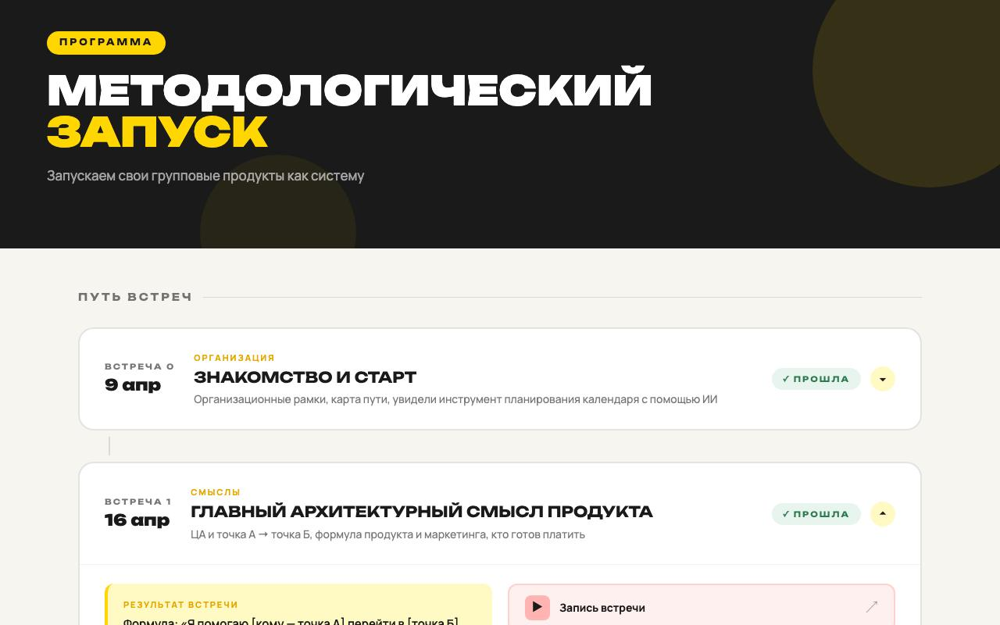
Попробуйте прямо здесь
Мини-пример · работает на этой странице
Материалы в примере условные. Попробуйте найти «пост» или «таблица», а потом нажмите «Бонусы».
Найдено: 8
Урок 1
Первый разговор с нейросетью
Как поставить задачу: роль, контекст и каким должен быть ответ.
Урок 2
Посты и тексты с ИИ
Контент-план на месяц и пост, который звучит вашим голосом.
Урок 3
Таблицы без формул наизусть
Учёт клиентов и расчёты, которые нейросеть собирает за вас.
Урок 4
Свой стиль в материалах
Паспорт стиля: цвета, шрифты и настроение для всех ваших материалов.
Урок 5
Страница по ссылке
Портфолио файлом и ссылка через GitHub без программиста.
Бонус
Шпаргалка промптов для постов
Готовые заготовки с местами для подстановки.
Бонус
Чек-лист перед публикацией страницы
Телефон, ссылки, личные данные – что проверить перед отправкой.
Бонус
Что не стоит отдавать нейросети
Памятка: личные данные клиентов, пароли, документы.
Ничего не нашлось. Попробуйте другое слово или нажмите «Все».
Что внутри хорошего портала
- Путь по порядку. Встречи или уроки по датам сверху вниз, и сразу видно, где программа сейчас.
- Статусы. «Прошла», «сегодня», «впереди» цветной меткой. Участник видит, что пропустил, без вопросов в чат.
- Карточка раскрывается. В закрытом виде – название и 1 строка, по клику – результат встречи, запись, задание и ссылки.
- Поиск по словам. Поле вверху фильтрует материалы прямо по мере набора: «таблица», «пост», «промпт».
- Фильтры по видам. Кнопки «Все / Уроки / Бонусы / Записи» оставляют на экране только нужное.
- Отметка «посмотрел(а)». Сохраняется в браузере, и участник видит свой прогресс по программе.
Промпт: портал под вашу программу
Скопируйте и заполните то, что в квадратных скобках
Ты – опытный веб-дизайнер и методолог. Помоги собрать портал материалов моей программы [название] – страницу, где лежит всё: встречи, записи, задания, ссылки. О задаче: – Программа: [что это, сколько встреч или уроков, сколько длится]. – Для кого: [кто участники]. – Что человек должен получить: [например, за минуту находить нужную запись или задание и видеть, что пропустил]. – Стиль: [паспорт стиля из урока 3 или 3 слова о настроении]. – Материалы: [вставьте список: дата, название, вид – урок / бонус / запись, ссылка, 1 строка описания]. Сначала задай мне 3–5 вопросов: как группировать материалы, какие нужны статусы, с чего будут открывать – телефон или компьютер. Потом покажи план страницы и верстай только после моего «да». Что должно быть: 1. Путь встреч по датам, у каждой статус «прошла», «сегодня» или «впереди» – он ставится сам по сегодняшней дате. 2. Карточка встречи раскрывается по клику: результат, запись, задание, ссылки. 3. Поиск вверху: поле ввода фильтрует карточки по словам из названия и описания. 4. Кнопки-фильтры: [Все / Уроки / Бонусы / Записи]. 5. Отметка «посмотрел(а)» у каждой карточки – сохраняется в браузере. Технически: один файл HTML, всё внутри файла, удобно с телефона. Список материалов вынеси в начало кода одним блоком и пометь, куда добавлять новые. Без регистрации и без внешних сервисов. Не придумывай материалы и ссылки – бери только из моего списка. Пришли файл целиком и коротко скажи, как его проверить.
Запускайте в нейросети, которая умеет делать файлы и код: ChatGPT, Claude, Gemini (ГигаЧат и Алиса помогут собрать список материалов). Готовый файл сохраните с расширением .html, откройте в браузере, проверьте поиск и фильтры и выложите по ссылке, как в уроке 4.
Проверьте перед тем, как отдавать
- Наберите в поиске 3 разных слова: находятся нужные материалы, а на пустой результат страница пишет «ничего не нашлось».
- Каждая кнопка-фильтр показывает только свой вид, а «Все» возвращает полный список.
- Ссылки на записи открываются у участника, а не только у вас: проверьте из другого браузера, где вы не вошли в свой аккаунт.
- Статусы совпадают с сегодняшним днём, и на портале нет того, что нельзя показать посторонним: бесплатная страница на GitHub Pages открыта всем, у кого есть ссылка.
- Попросите нейросеть добавить 1 новый материал: он должен встать на своё место, а остальное не поменяться.
Показать и собрать · 20
Анкета и бриф
Страница с вопросами, на которые человек отвечает своими словами: отзыв после курса, бриф перед работой с вами, вводная анкета для новой группы. В конце ответы складываются в аккуратный текст, который удобно прочитать и переслать.
Когда пригодится
- Психолог отправляет новому клиенту анкету перед первой встречей: с каким запросом приходит и чего ждёт.
- Фитнес-тренер собирает вводную анкету: опыт тренировок, сколько времени в неделю есть, цель на 2 месяца.
- Автор курса после потока просит обратную связь: 7 вопросов, 3 минуты, анонимно.
- Копирайтер или дизайнер получает бриф от клиента до созвона – и на встрече уже обсуждает решения, а не собирает вводные.
- Бухгалтер просит нового клиента заполнить анкету: форма бизнеса, система налогов, сколько операций в месяц.
Как это выглядит у меня
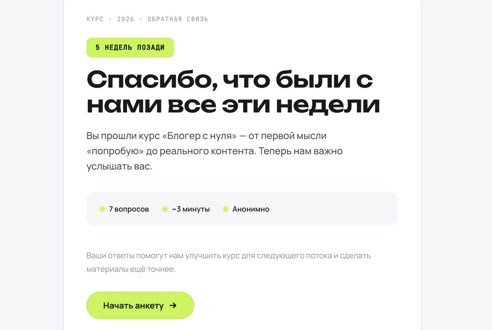
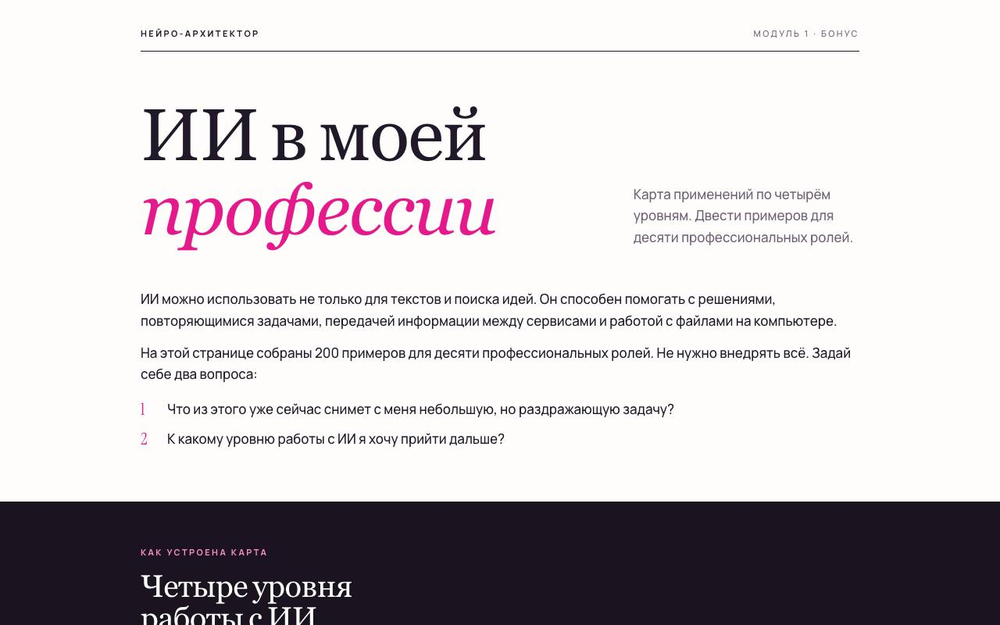
Попробуйте прямо здесь
Мини-пример · работает на этой странице
Ваш бриф
Ответы остаются только в этом браузере: страница никуда их не отправляет.
Что внутри хорошей анкеты
- Обещание в начале. Сколько вопросов, сколько минут, анонимно или нет – человек знает, на что соглашается.
- Разные типы вопросов. Выбор варианта, шкала от 1 до 10, короткий и развёрнутый ответ – так анкета не утомляет.
- Ответы сохраняются в браузере. Закрыли вкладку, вернулись – написанное на месте.
- Итог аккуратным текстом. Кнопка «Собрать ответы» складывает всё в понятный текст, кнопка «Скопировать» – чтобы отправить.
- Честно о том, куда уходят ответы. Простая HTML-страница сама ничего никуда не отправляет: ответы остаются у того, кто заполнял. Есть 2 пути. Человек копирует итог и присылает вам в мессенджер или на почту – подходит для небольших групп. Или вопросы переносят в Google Форму, Яндекс Форму или форму вашей платформы, а на странице ставят ссылку – тогда ответы приходят к вам сами, в таблицу.
- Бережно с личными данными. Имя, телефон и почта – это персональные данные: если они нужны, понадобятся согласие человека и документы о данных. Для анонимного отзыва контакты не нужны вовсе.
Промпт: анкета под вашу задачу
Скопируйте и заполните то, что в квадратных скобках
Ты – методолог и верстальщик. Помоги мне собрать анкету одной HTML-страницей. Что это за анкета: [обратная связь после курса / бриф клиента перед работой / вводная анкета для группы] Для кого: [кто будет заполнять] Что я хочу узнать: [3–7 тем или готовые вопросы] Что человек должен получить в конце: [аккуратный текст своих ответов, который можно отправить мне] Стиль: [мой паспорт стиля из урока 3 или 2–3 цвета и настроение] Сначала задай мне 3–5 вопросов: сколько вопросов, анонимно или нет, где будут заполнять (телефон или компьютер), как я хочу получать ответы. Потом покажи план: список вопросов и тип поля у каждого. Дождись моего «да» и только потом верстай. Что должно быть в анкете: – в начале обещание: сколько вопросов, сколько минут, анонимно или нет; – разные типы вопросов: выбор варианта, шкала от 1 до 10, короткий и развёрнутый ответ; – ответы сохраняются в браузере, пока человек заполняет; – в конце кнопка «Собрать ответы»: все вопросы и ответы аккуратным текстом, кнопка «Скопировать» и подсказка, куда прислать: [мессенджер или почта]; – без полей для имени, телефона и почты, если я отдельно не попрошу. Помни: страница сама никуда не отправляет ответы. Не пиши код, который якобы их отправляет, и не показывай надпись «Ответ отправлен». Если мне нужен настоящий сбор, предложи перенести вопросы в Google Форму или форму моей платформы и поставить на неё ссылку. Технически: один файл HTML, всё внутри файла, удобно с телефона, без регистрации, без внешних сервисов. Пришли файл целиком и коротко скажи, как его проверить.
Запускайте в нейросети, которая умеет делать файлы и код: ChatGPT, Claude, Gemini (ГигаЧат и Алиса отдадут код текстом – скопируйте его в файл). Сохраните результат как файл .html, откройте в браузере, заполните сами и выложите по ссылке, как в уроке 4.
Проверьте перед тем, как отдавать
- Заполните анкету сами и нажмите «Собрать ответы»: в тексте есть все вопросы и ваши ответы, пустые помечены.
- «Скопировать» работает: вставьте текст в мессенджер и посмотрите, как он читается.
- На странице нигде не написано «Ответ отправлен», если он никуда не уходит, и понятно, куда прислать итог.
- Если вы спрашиваете контакты, сначала разберитесь с согласием на обработку персональных данных.
- С телефона поля удобно заполнять, кнопки не прячутся под клавиатурой.
Показать и собрать · 21
Редактор и генератор
Страница-инструмент, где человек сам собирает результат: вводит текст, выбирает фон и стиль и скачивает готовое – карусель, обложку, расписание. Инструмент делается 1 раз, а пользуетесь им вы сами, ваша команда или ученики.
Когда пригодится
- Блогер собирает карусели для ленты в своих цветах за пару минут, без дизайнера и подписок.
- Фитнес-тренер делает генератор расписания: вписывает тренировки на неделю и скачивает картинку для сторис.
- Психолог даёт участникам группы генератор открыток с фразой дня в своём фирменном стиле.
- Репетитор собирает карточки для повторения слов: вписал пары «слово – перевод» и скачал набор.
- Эксперт с командой отдаёт ассистенту редактор обложек, чтобы все обложки к эфирам выглядели одинаково.
Как это выглядит у меня
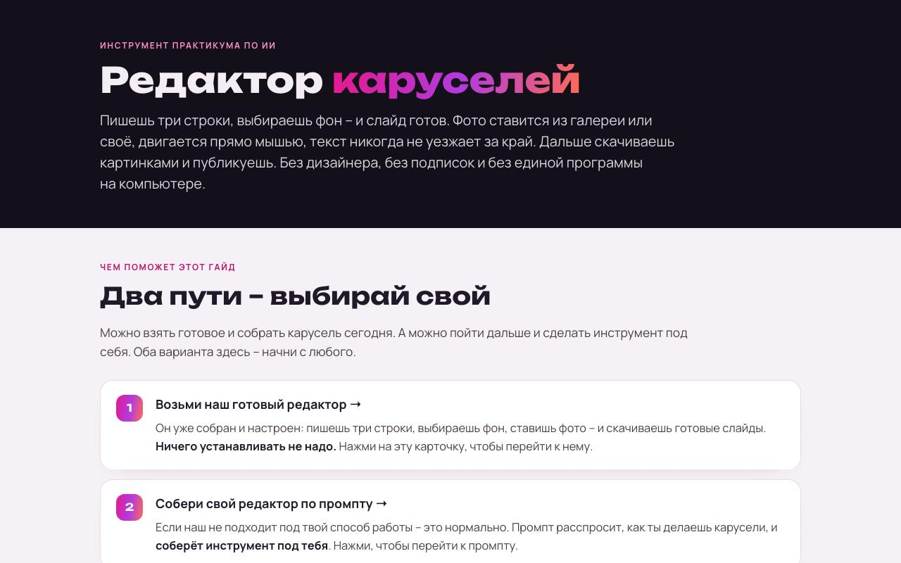
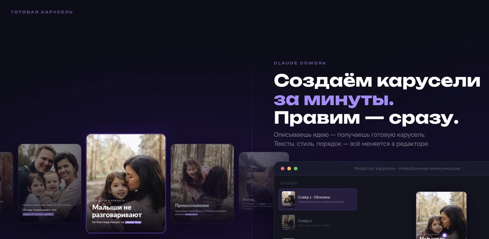
Что внутри хорошего редактора
- Ввод текста прямо на слайде или рядом. Человек пишет там, где текст будет стоять, и сразу видит результат.
- Готовые стили и фоны. 3–5 вариантов в ваших фирменных цветах: выбрали стиль – и поменялось всё оформление.
- Живой предпросмотр. Слайд, обложка или расписание обновляются с каждой буквой, а длинный текст не уезжает за край.
- Список слайдов. Добавить, удалить, поменять местами – для каруселей и серий.
- Кнопка «Скачать». Каждый слайд картинкой в нужном формате: квадрат, лента, сторис.
- Автосохранение и настройки по умолчанию. Закрыли вкладку – работа на месте, а подпись и логотип подставляются сами.
Промпт: редактор под вашу задачу
Скопируйте и заполните то, что в квадратных скобках
Ты – разработчик простых инструментов для людей без технического образования. Мне нужен [редактор каруселей / генератор обложек / генератор расписания] под мой способ работы. Я не программист, объясняй всё простыми словами. Что я делаю сейчас: [как и где собираю это сейчас и сколько уходит времени] Кто будет пользоваться: [я, ассистент, мои ученики] Что должно получаться на выходе: [например «карусель из 5 слайдов для ленты»] Мой стиль: [паспорт стиля из урока 3: цвета, шрифты, логотип, подпись] Сначала разберись, как я работаю: задай 3–5 вопросов по одному и жди ответа на каждый. Спроси, что мешает в нынешнем процессе, что обязательно должно быть на каждом слайде, в каких форматах я публикую, что я хочу делать руками, а что – чтобы делалось само. Потом опиши будущий инструмент простыми словами: что на экране и что происходит по каждой кнопке. Собирай только после моего «да». Что должно быть в инструменте: – ввод текста прямо на слайде или в полях рядом, с живым предпросмотром; – [3–5] готовых стилей и фонов в моих цветах; – добавить, удалить и поменять местами слайды; – кнопка «Скачать»: каждый слайд картинкой; – подпись и логотип подставляются сами. Технически: один файл HTML, всё внутри файла, без внешних библиотек и установки, работает с компьютера и с телефона, сделанное сохраняется в браузере само, без регистрации и внешних сервисов. Пришли файл целиком и коротко скажи, как его проверить. После первой версии предложи 3 улучшения и жди, что я выберу.
Запускайте в нейросети, которая умеет делать файлы: ChatGPT, Claude или Gemini (в ГигаЧате и Алисе код придёт текстом – скопируйте его в файл). Сохраните результат как .html, откройте в браузере, соберите 1 карусель и выложите по ссылке, как в уроке 4.
Проверьте перед тем, как отдавать
- Соберите 1 настоящую карусель от начала до конца: текст, стиль, скачивание.
- Длинный заголовок не вылезает за край слайда и не обрезается.
- Скачанные картинки нужного размера и чёткие на телефоне.
- После закрытия вкладки работа сохранилась.
- Цвета и шрифты ваши, а не те, что нейросеть выбрала по умолчанию.